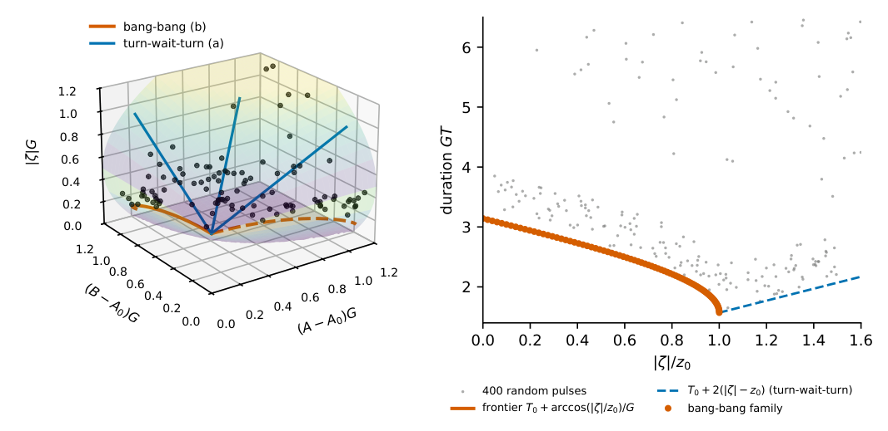
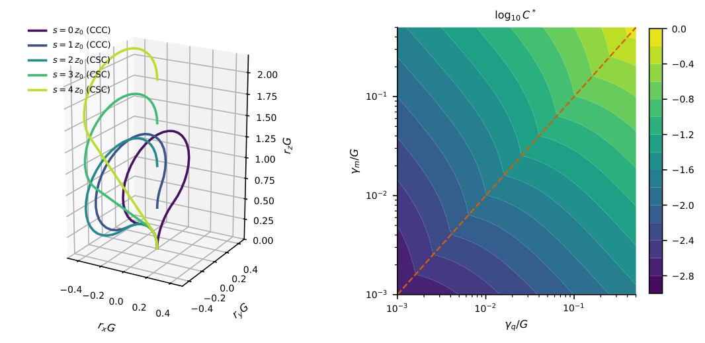
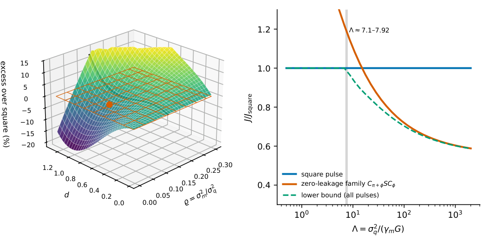

Robust qubit–memory transfer against quasi-static frequency noise costs time and exposure: exact bounds from Dubins curves
At a glance
🚀 Start here: Theorem 1: Robustness costs exposure and time: the disk inequality and the minimal duration T₀ + arccos(|ζ|/z₀)/G.
Main results:
- Theorem 1: Robustness costs exposure and time: the disk inequality and the minimal duration T₀ + arccos(|ζ|/z₀)/G
- Proposition 3: Fixed phase: the exact minimal exposure cost, from the shortest Dubins U-turn
- Proposition 5: Second-order error under quasi-static noise, for every pulse; when the square pulse is optimal
- Proposition 8: Slow noise together with memory loss: square-pulse optimality and the large-noise asymptotics
🗺️ Map of the results (click a box to go to it)
Dependencies in the written proof: an arrow A → B means that this proof of B uses A. Every result rests on its written proof; the tags record what was checked besides, and each statement's “Evidence & scope” block says how far. The colour of a box is its strongest tag, in the order above; the tags in the box give the rest. Boxes with a thick border are the main results; click a box to read the statement.
📐 Setting (copied from the paper, §§1–2)
A complete transfer of one excitation from a qubit to a memory mode, with no losses, a complex coupling \(|g(t)|\le G\) and any detuning \(D(t)\), of duration \(T\) with \(U(T)|a\rangle \propto |b\rangle \). The exposures and the leakage are the entries of \(K=\int _0^T U^\dagger (t)P_aU(t)\, dt=\begin{pmatrix} A & \bar\zeta \\ \zeta & B \end{pmatrix}\), \(A+B=T\): \(A\) and \(B\) are the times spent in the qubit and in the memory, and \(\zeta \) is the first-order leakage under a static shift \(\Delta _0\) of the qubit level (\(U(T)\mapsto U(T)(I-i\Delta _0K)+O(\Delta _0^2)\)). The square (resonant) pulse has \(T_0=\pi /(2G)\), \(A_0=\pi /(4G)\) and \(z_0=1/(2G)\). With slow Gaussian offsets of variance \(\sigma _q^2\) on the qubit and memory decay at rate \(\gamma _m\), \(\Lambda =\sigma _q^2/(\gamma _mG)\).
2 Robustness costs time and exposure
MarAthm:popsame-setting Robust_Disk.robust_disk, Robust_Disk.robust_disk_G, Robust_Disk.exposure_bound_general, Robust_Core.angle_bound, Robust_Core.equatorial_crossing, Robust_Core.frontier_general, Memory_Robust.concavity_step, Memory_Robust.tent_integral, Memory_Robust.frontier_step, Memory_Robust.disk_from_two_bounds, Memory_Robust.bang_bang_equality, Memory_Robust.turn_wait_turn_equality, Memory_Robust.robust_cost_amgm, Memory_Robust.min_robust_A For every complete transfer without losses, with \(|g|\le G\) and any detuning:
\(A\ge A_0\), \(B\ge A_0\) and
\[ \bigl(|\zeta |-z_0\bigr)^2\le (A-A_0)(B-A_0); \]if \(|\zeta |\le z_0\), then
\[ T\ge T_0+\frac1G\arccos \frac{|\zeta |}{z_0}. \]
(b) is sharp for every \(|\zeta |\le z_0\): equality holds for \(g=+G\) during \((\pi +d)/(2G)\) followed by \(g=-G\) during \(d/(2G)\), \(d=\arccos (|\zeta |/z_0)\), and for its time reverse. (a) is an equality on the branch \(|\zeta |\ge z_0\): for \(+G\) during \(\alpha /(2G)\), no coupling and no detuning during \(w\), and \(+G\) again during \((\pi -\alpha )/(2G)\), for every \(\alpha \in [0,\pi ]\) and \(w\ge 0\) (the square pulse is \(w=0\)).
Isabelle · oursshow
robust_disk · Isabelle/MemoryAccessFloors/Robust_Disk.thy, line 677
theorem robust_disk:
assumes "sphere_curve n n' T nu"
shows "pi / (2 * nu) \<le> integral {0..T} (\<lambda>t. (1 + n t $ 3) / 2)"
and "pi / (2 * nu) \<le> integral {0..T} (\<lambda>t. (1 - n t $ 3) / 2)"
and "(sqrt ((integral {0..T} (\<lambda>t. n t $ 1))\<^sup>2 + (integral {0..T} (\<lambda>t. n t $ 2))\<^sup>2) / 2 - 1 / nu)\<^sup>2
\<le> (integral {0..T} (\<lambda>t. (1 + n t $ 3) / 2) - pi / (2 * nu)) *
(integral {0..T} (\<lambda>t. (1 - n t $ 3) / 2) - pi / (2 * nu))"robust_disk_G · Isabelle/MemoryAccessFloors/Robust_Disk.thy, line 694
theorem robust_disk_G:
assumes "0 < G" and "sphere_curve n n' T (2 * G)"
shows "pi / (4 * G) \<le> integral {0..T} (\<lambda>t. (1 + n t $ 3) / 2)"
and "pi / (4 * G) \<le> integral {0..T} (\<lambda>t. (1 - n t $ 3) / 2)"
and "(sqrt ((integral {0..T} (\<lambda>t. n t $ 1))\<^sup>2 + (integral {0..T} (\<lambda>t. n t $ 2))\<^sup>2) / 2 - 1 / (2 * G))\<^sup>2
\<le> (integral {0..T} (\<lambda>t. (1 + n t $ 3) / 2) - pi / (4 * G)) *
(integral {0..T} (\<lambda>t. (1 - n t $ 3) / 2) - pi / (4 * G))"exposure_bound_general · Isabelle/MemoryAccessFloors/Robust_Disk.thy, line 667
theorem exposure_bound_general:
assumes "sphere_curve n n' T nu"
shows "integral {0..T} (\<lambda>t. sqrt ((n t $ 1)\<^sup>2 + (n t $ 2)\<^sup>2)) - 2 / nu \<le>
2 * sqrt ((integral {0..T} (\<lambda>t. (1 + n t $ 3) / 2) - pi / (2 * nu)) *
(integral {0..T} (\<lambda>t. (1 - n t $ 3) / 2) - pi / (2 * nu)))"angle_bound · Isabelle/MemoryAccessFloors/Robust_Core.thy, line 925
theorem angle_bound:
assumes "bounded_speed_curve n n' T nu"
and "0 \<le> s" "s \<le> T" "0 \<le> t" "t \<le> T" and "nu * \<bar>s - t\<bar> \<le> pi"
shows "cos (nu * \<bar>s - t\<bar>) \<le> inner (n s) (n t)"equatorial_crossing · Isabelle/MemoryAccessFloors/Robust_Core.thy, line 934
theorem equatorial_crossing: assumes "sphere_curve n n' T nu" shows "\<exists>ts. 0 \<le> ts \<and> ts \<le> T \<and> n ts $ 3 = 0"
frontier_general · Isabelle/MemoryAccessFloors/Robust_Core.thy, line 942
theorem frontier_general:
assumes "sphere_curve n n' T nu" and "nu * T - pi \<le> pi"
shows "cos ((nu * T - pi) / 2) \<le>
nu * (sqrt ((integral {0..T} (\<lambda>t. n t $ 1))\<^sup>2 + (integral {0..T} (\<lambda>t. n t $ 2))\<^sup>2) / 2)"concavity_step · Isabelle/MemoryAccessFloors/Memory_Robust.thy, line 20
lemma concavity_step: fixes s a :: real assumes "0 \<le> s" and "s \<le> pi" and "0 \<le> a" and "a \<le> s" shows "1 + cos (s / 2) \<le> cos (a / 2) + cos ((s - a) / 2)"
tent_integral · Isabelle/MemoryAccessFloors/Memory_Robust.thy, line 51
lemma tent_integral:
fixes nu a ts :: real
assumes "0 < nu" and "0 \<le> a" and "ts = (pi / 2 + a) / nu"
shows "((\<lambda>t. cos (min (nu * (ts - t)) (pi / 2 + nu * t))) has_integral
(2 * cos (a / 2) - 1) / nu) {0..ts}"frontier_step · Isabelle/MemoryAccessFloors/Memory_Robust.thy, line 143
lemma frontier_step:
fixes G nu s zeta z0 T T0 :: real
assumes "0 < G" and "nu = 2 * G" and "T0 = pi / (2 * G)" and "z0 = 1 / (2 * G)"
and "0 \<le> s" and "s \<le> pi" and "0 \<le> zeta" and "zeta \<le> z0"
and "T = (pi + s) / nu" and "cos (s / 2) \<le> zeta / z0"
shows "T0 + arccos (zeta / z0) / G \<le> T"disk_from_two_bounds · Isabelle/MemoryAccessFloors/Memory_Robust.thy, line 170
lemma disk_from_two_bounds:
fixes G nu zeta z0 Q X Y :: real
assumes "0 < G" and "nu = 2 * G" and "z0 = 1 / (2 * G)"
and "\<bar>2 * zeta - 2 / nu\<bar> \<le> Q - 2 / nu" and "Q - 2 / nu \<le> 2 * sqrt (X * Y)"
and "0 \<le> X" and "0 \<le> Y"
shows "(zeta - z0)\<^sup>2 \<le> X * Y"bang_bang_equality · Isabelle/MemoryAccessFloors/Memory_Robust.thy, line 187
lemma bang_bang_equality:
fixes G d T T0 A0 z0 zeta A B :: real
assumes "0 < G" and "0 \<le> d" and "d \<le> pi / 2"
and "T0 = pi / (2 * G)" and "A0 = pi / (4 * G)" and "z0 = 1 / (2 * G)"
and "T = (pi + 2 * d) / (2 * G)" and "zeta = cos d / (2 * G)"
and "A = A0 + (d - sin d) / (2 * G)" and "B = A0 + (d + sin d) / (2 * G)"
shows "A + B = T"
and "T = T0 + arccos (zeta / z0) / G"
and "(zeta - z0)\<^sup>2 \<le> (A - A0) * (B - A0)"turn_wait_turn_equality · Isabelle/MemoryAccessFloors/Memory_Robust.thy, line 220
lemma turn_wait_turn_equality:
fixes G L alpha z0 A0 zeta A B :: real
assumes "0 \<le> L" and "z0 = 1 / (2 * G)" and "A0 = pi / (4 * G)"
and "zeta = z0 + L * sin alpha / 2"
and "A = A0 + L * (1 + cos alpha) / 2" and "B = A0 + L * (1 - cos alpha) / 2"
shows "(zeta - z0)\<^sup>2 = (A - A0) * (B - A0)" and "A + B = 2 * A0 + L"robust_cost_amgm · Isabelle/MemoryAccessFloors/Memory_Robust.thy, line 237
lemma robust_cost_amgm:
fixes G gq gm x y :: real
assumes "0 < G" and "0 \<le> gq" and "0 \<le> gm" and "0 \<le> x" and "0 \<le> y"
and "1 / (4 * G\<^sup>2) \<le> x * y"
shows "sqrt (gq * gm) / G \<le> gq * x + gm * y"min_robust_A · Isabelle/MemoryAccessFloors/Memory_Robust.thy, line 263
lemma min_robust_A:
fixes G d A A0 zeta :: real
assumes "0 < G" and "d = pi / 2" and "A0 = pi / (4 * G)"
and "A = A0 + (d - sin d) / (2 * G)" and "zeta = cos d / (2 * G)"
shows "A = (pi - 1) / (2 * G)" and "zeta = 0"Proof: in this note·Formalized: Isabelle/HOL, by the author (public formalizations repository)·Covers: the whole statement
↳ Used in: Corollary 2, 4, Proposition 5, Lemma 6, 7, Proposition 8, 10, 11
Choose a time \(t_e\) with \(n_z(t_e)=0\) and put \(\mathbf e=\mathbf n(t_e)\), \(x(t)=\mathbf n(t)\cdot \mathbf e\). Since \(\mathbf e\) is equatorial, \(\int x\, dt=\mathbf e\cdot \int \mathbf n_\perp \le 2|\zeta |\). The angle \(\psi (t)\) between \(\mathbf n(t)\) and \(\mathbf e\) is at most \(\lambda |t-t_e|\), and, because the end points are the poles, at most \(\pi /2+\lambda t\) and \(\pi /2+\lambda (T-t)\); in particular \(\lambda t_e\ge \pi /2\) and \(\lambda (T-t_e)\ge \pi /2\).
(b) Put \(\alpha =\lambda t_e-\pi /2\) and \(\beta =\lambda (T-t_e)-\pi /2\), so \(\alpha +\beta =\lambda T-\pi =:\Theta \), and assume \(\Theta \le \pi \) (otherwise there is nothing to prove). The bound \(\bar\psi (t)=\min (\lambda |t-t_e|,\ \pi /2+\lambda t,\ \pi /2+\lambda (T-t))\) is at most \(\pi /2+\max (\alpha ,\beta )/2\le \pi \), where the cosine decreases, so \(x=\cos \psi \ge \cos \bar\psi \); integrating this piecewise linear angle on each side of \(t_e\) gives
the last step because \(\alpha \mapsto \cos (\alpha /2)+\cos ((\Theta -\alpha )/2)\) is concave on \([0,\Theta ]\) and so is smallest at an end point. With \(\lambda =2G\) this reads \(\cos (G(T-T_0))\le |\zeta |/z_0\), which is (b).
(a) On \(|t-t_e|\le \pi /(2\lambda )\) the speed bound gives \(x(t)\ge \cos (\lambda |t-t_e|)\ge 0\), so \(\int x_+\ge 2/\lambda \). With \(q=|\mathbf n_\perp |\ge |x|\) and \(Q=\int q\), this gives \(Q+2|\zeta |\ge \int (q+x)\ge 2\int x_+\ge 4/\lambda \), and with \(2|\zeta |\le Q\) we get \(\bigl|2|\zeta |-2/\lambda \bigr|\le Q-2/\lambda \). Let \(\theta =\arccos n_z\), the spherical distance of \(n\) from the north pole, which is \(\lambda \)-Lipschitz and hence absolutely continuous (the formal proof avoids \(\theta \) near the poles with a comparison argument, so that curves through a pole are covered), and \(h=1-\dot\theta /\lambda \ge 0\); the fundamental theorem of calculus gives \(\int (1\pm \cos \theta )\dot\theta =\pi \) and \(\int \sin \theta \, \dot\theta =2\) whether or not \(\theta \) is monotone, so \(A-\pi /(2\lambda )=\tfrac 12\int (1+\cos \theta )h\), \(B-\pi /(2\lambda )=\tfrac 12\int (1-\cos \theta )h\) and \(Q-2/\lambda =\int \sin \theta \, h\). Cauchy–Schwarz gives \(Q-2/\lambda \le 2\sqrt{(A-\pi /(2\lambda ))(B-\pi /(2\lambda ))}\), and the two inequalities give (a).
The equality cases are direct computations: for the bang–bang pulse of (b), \(T=(\pi +2d)/(2G)\), \(|\zeta |=\cos d/(2G)\), \(A=A_0+(d-\sin d)/(2G)\) and \(B=A_0+(d+\sin d)/(2G)\); its time reverse exchanges the two values of \(A-A_0\) and \(B-A_0\).
An unknown static frequency offset leaves a first-order error measured by the leakage \(\zeta \). Reducing it has a price that no pulse escapes: the exposures \(A,B\) must exceed \(A_0\) enough to satisfy \((|\zeta |-z_0)^2\le (A-A_0)(B-A_0)\), and the duration must exceed \(T_0\) by \(\arccos (|\zeta |/z_0)/G\). A fully robust transfer (\(\zeta =0\)) therefore takes at least \(\pi /G\), twice the resonant swap.
🛡️ Evidence & scope
Literature: Companion paper: this statement shares the setting of paper A (Exact limits on writing a superconducting quantum memory), Theorem 4 (silent link, not printed in the paper). https://karlesmarin.github.io/blueprints/memory-floors/
🧪 Lab: Figure 1 live: design a pulse and see where it falls against the disk and the frontier of the theorem
Integrates the lossless two-level dynamics exactly, piece by piece, for a pulse you choose (units \(G=1\), so \(z_0=1/2\), \(A_0=\pi /4\), \(T_0=\pi /2\)): the bang–bang pulse of parameter \(d\), the turn–wait–turn pulse \((\alpha ,w)\) of equality (a), the pulse \(C_{\pi +\phi }SC_\phi \) (a turn of \(\pi +\phi \), a wait, a turn of \(\phi \) back), or a random piecewise pulse with complex coupling \(|g|\le u\, G\) and detuning whose last piece is built to finish the transfer. It reads \(A\), \(B\), \(|\zeta |\) and \(T\) from \(K=\int U^\dagger P_aU\) and checks the two statements of the theorem: \((|\zeta |-z_0)^2\le (A-A_0)(B-A_0)\) and \(T\ge T_0+\arccos (|\zeta |/z_0)/G\). In 2D, duration against \(|\zeta |/z_0\) with the frontier, the turn–wait–turn line and 150 random pulses; in 3D, the point in \((A-A_0,B-A_0,|\zeta |)\) between the two sheets \(|\zeta |=z_0\pm \sqrt{(A-A_0)(B-A_0)}\), the bang–bang curves (orange, equality in (b)) and the turn–wait–turn lines (blue, equality in (a)). With \(u{\gt}1\) the hypothesis \(|g|\le G\) is broken and the theorem fails: that is the control.
Memory_Robust.robust_cost_amgm, Robust_Cost_Branches.robust_cost_min_branch, Robust_Cost_Branches.robust_cost_both_branches, Robust_Cost_Branches.robust_cost_equal_rates A complete transfer with \(\zeta =0\) satisfies
With relaxation only (no dephasing), to first order in the rates the write channel loses \(({\gamma _q}A+{\gamma _m}B)/3\), and the square pulse, which does not cancel \(\zeta \), reaches the floor \(({\gamma _q}+{\gamma _m})A_0/3\); so cancelling the leakage costs at least a third of the right-hand side above that floor, whatever the pulse. For equal rates \(\gamma \) the bound is \(\pi \gamma /(2G)\) and is attained by the bang–bang pulse \((3\pi /(4G),\pi /(4G))\); the branch \(\sqrt{{\gamma _q}{\gamma _m}}/G\) is not attained by pulses of fixed phase and no detuning (see above).
Isabelle · ours · partshow
Only a part is in Isabelle: the named pieces are machine-checked; the statement as a whole is a written proof
robust_cost_amgm · Isabelle/MemoryAccessFloors/Memory_Robust.thy, line 237
lemma robust_cost_amgm:
fixes G gq gm x y :: real
assumes "0 < G" and "0 \<le> gq" and "0 \<le> gm" and "0 \<le> x" and "0 \<le> y"
and "1 / (4 * G\<^sup>2) \<le> x * y"
shows "sqrt (gq * gm) / G \<le> gq * x + gm * y"robust_cost_min_branch · Isabelle/MemoryAccessFloors/Robust_Cost_Branches.thy, line 23
theorem robust_cost_min_branch: fixes G gq gm x y :: real assumes "0 < G" "0 \<le> gq" "0 \<le> gm" "0 \<le> x" "0 \<le> y" "pi / (2 * G) \<le> x + y" shows "pi / 2 * min gq gm / G \<le> gq * x + gm * y"
robust_cost_both_branches · Isabelle/MemoryAccessFloors/Robust_Cost_Branches.thy, line 39
theorem robust_cost_both_branches:
fixes G gq gm x y :: real
assumes "0 < G" "0 \<le> gq" "0 \<le> gm" "0 \<le> x" "0 \<le> y"
and "1 / (4 * G\<^sup>2) \<le> x * y" and "pi / (2 * G) \<le> x + y"
shows "max (sqrt (gq * gm)) (pi / 2 * min gq gm) / G \<le> gq * x + gm * y"robust_cost_equal_rates · Isabelle/MemoryAccessFloors/Robust_Cost_Branches.thy, line 57
theorem robust_cost_equal_rates: fixes G g :: real assumes "0 < G" "0 \<le> g" shows "max (sqrt (g * g)) (pi / 2 * min g g) / G = pi * g / (2 * G)"
Proof: in this note·Formalized: Isabelle/HOL, by the author (public formalizations repository)·Covers: part: the named pieces are machine-checked; the statement as a whole is a written proof
↳ Not used by another result of the paper.
By (a) with \(\zeta =0\), \((A-A_0)(B-A_0)\ge 1/(4G^2)\), and \({\gamma _q}u+{\gamma _m}v\ge 2\sqrt{{\gamma _q}{\gamma _m}\, uv}\). By (b) with \(\zeta =0\), \((A-A_0)+(B-A_0)=T-2A_0\ge \pi /(2G)\), and \({\gamma _q}u+{\gamma _m}v\ge \min ({\gamma _q},{\gamma _m})(u+v)\). The bang–bang pulse has \(T=\pi /G\). At first order \(1-p={\gamma _q}A+{\gamma _m}B\), since \(A=\int |a|^2\) and \(B=\int |b|^2\) along the lossless transfer, and \(1-c=\tfrac 12({\gamma _q}A+{\gamma _m}B)\), so \(r=(3-p-2c)/6=({\gamma _q}A+{\gamma _m}B)/3\).
🖼️ Figure 1

Theorem 1 as a picture. Left: in the coordinates \((A-A_0,B-A_0,|\zeta |)\) (units of \(1/G\)) every lossless complete transfer lies between the two sheets \(|\zeta |=z_0\pm \sqrt{(A-A_0)(B-A_0)}\) (translucent); dots: 400 random piecewise-constant pulses with complex coupling \(|g|\le G\) and detuning (those inside the box shown), none of which violates (a) or (b) (smallest margins \(5\cdot 10^{-4}\) and \(2\cdot 10^{-2}\)). Orange: the bang–bang family, equality in (b); blue: turn–wait–turn pulses, equality in (a) for \(|\zeta |\ge z_0\). Right: duration against \(|\zeta |/z_0\), with the frontier \(T_0+\arccos (|\zeta |/z_0)/G\) of (b) and the turn–wait–turn line beyond \(z_0\).
MarAthm:popcompares Robust_Cost.csc_derivative, Robust_Cost.closed_form_value, Robust_Cost.csc_minimum, Robust_Cost.ccc_slope, Robust_Cost.ccc_branch, Robust_Cost.equal_rates, Robust_Cost.total_minimum, Dubins_U_Turn.lstar_le_out, Dubins_U_Turn.lstar_le_lin, Dubins_U_Turn.lstar_le_ccc_a, Dubins_U_Turn.lstar_le_ccc_b, Dubins_U_Turn.ccc_b_above_lin Among complete transfers with \(\zeta =0\) by pulses \(g=e^{i\varphi }u(t)\), \(u\) real, \(\varphi \) constant, without detuning,
attained for \({\gamma _q}\ne {\gamma _m}\), both positive, by a turn of \(\pi +\phi \), a wait without coupling, and a turn of \(\phi \) back, with \(|A-B|=({\gamma _q}+{\gamma _m})/(2G\sqrt{{\gamma _q}{\gamma _m}})\), and for equal positive rates by the bang–bang pulse. If exactly one rate vanishes the value \(0\) is an infimum, approached only by ever longer waits and not attained; if both vanish the cost is identically zero.
Isabelle · ours · partshow
Only a part is in Isabelle: the named pieces are machine-checked; the statement as a whole is a written proof
csc_derivative · Isabelle/MemoryAccessFloors/Robust_Cost.thy, line 139
theorem csc_derivative: fixes u :: real assumes "2 < u" shows "(Lcsc has_real_derivative sqrt (u\<^sup>2 - 4) / u) (at u)"
closed_form_value · Isabelle/MemoryAccessFloors/Robust_Cost.thy, line 225
theorem closed_form_value:
fixes a b :: real
assumes "b < a" and "0 < b"
shows "sqrt (((a + b) / sqrt (a * b))\<^sup>2 - 4) = (a - b) / sqrt (a * b)"
and "cost a b ((a + b) / sqrt (a * b)) = (a + b) * arccos ((a - b) / (a + b))"csc_minimum · Isabelle/MemoryAccessFloors/Robust_Cost.thy, line 435
theorem csc_minimum: fixes a b u :: real assumes "b < a" and "0 < b" and "2 \<le> u" shows "(a + b) * arccos ((a - b) / (a + b)) \<le> cost a b u"
ccc_slope · Isabelle/MemoryAccessFloors/Robust_Cost.thy, line 495
theorem ccc_slope:
fixes u :: real
assumes "0 \<le> u" and "u \<le> 2"
shows "(Lccc has_real_derivative - 4 * u / sqrt ((12 - u\<^sup>2) * (4 + u\<^sup>2))) (at u)"
and "\<bar>- 4 * u / sqrt ((12 - u\<^sup>2) * (4 + u\<^sup>2))\<bar> \<le> 1"
and "- 4 * u / sqrt ((12 - u\<^sup>2) * (4 + u\<^sup>2)) \<le> 0"ccc_branch · Isabelle/MemoryAccessFloors/Robust_Cost.thy, line 595
theorem ccc_branch: fixes a b u :: real assumes "0 \<le> b" and "b \<le> a" and "0 \<le> u" and "u \<le> 2" shows "cost a b 2 \<le> cost a b u" and "cost a b 2 = (a + b) * pi / 2 - (a - b)"
equal_rates · Isabelle/MemoryAccessFloors/Robust_Cost.thy, line 618
theorem equal_rates:
fixes a u :: real
assumes "0 < a" and "0 \<le> u"
shows "pi * a \<le> cost a a u"
and "cost a a 2 = pi * a"
and "(a + a) * arccos ((a - a) / (a + a)) = pi * a"total_minimum · Isabelle/MemoryAccessFloors/Robust_Cost.thy, line 652
theorem total_minimum:
fixes a b u :: real
assumes "b < a" and "0 < b" and "0 \<le> u"
shows "(a + b) * arccos ((a - b) / (a + b)) \<le> cost a b u"
and "cost a b ((a + b) / sqrt (a * b)) = (a + b) * arccos ((a - b) / (a + b))"lstar_le_out · Isabelle/MemoryAccessFloors/Dubins_U_Turn.thy, line 514
theorem lstar_le_out: fixes s :: real assumes "0 \<le> s" shows "Lstar s \<le> Lout s"
lstar_le_lin · Isabelle/MemoryAccessFloors/Dubins_U_Turn.thy, line 527
theorem lstar_le_lin: fixes s :: real assumes "2 \<le> s" shows "Lstar s \<le> Lin s"
lstar_le_ccc_a · Isabelle/MemoryAccessFloors/Dubins_U_Turn.thy, line 540
theorem lstar_le_ccc_a: fixes s :: real assumes "0 \<le> s" and "s \<le> sqrt 12" shows "Lstar s \<le> Lccc_a s"
lstar_le_ccc_b · Isabelle/MemoryAccessFloors/Dubins_U_Turn.thy, line 553
theorem lstar_le_ccc_b: fixes s :: real assumes "0 \<le> s" and "s \<le> sqrt 12" shows "Lstar s \<le> Lccc_b s"
ccc_b_above_lin · Isabelle/MemoryAccessFloors/Dubins_U_Turn.thy, line 478
theorem ccc_b_above_lin: fixes s :: real assumes "2 \<le> s" and "s \<le> sqrt 12" shows "Lin s \<le> Lccc_b s"
folded_curve · Isabelle/MemoryAccessFloors/Meridian_Unfolding.thy, line 615
theorem folded_curve: "sphere_curve m m' T nu"
folded_planar · Isabelle/MemoryAccessFloors/Meridian_Unfolding.thy, line 628
theorem folded_planar: "0 \<le> t \<Longrightarrow> t \<le> T \<Longrightarrow> m t $ 2 = 0"
folded_displacement · Isabelle/MemoryAccessFloors/Meridian_Unfolding.thy, line 631
theorem folded_displacement: "integral {0..T} m = integral {0..T} n"Proof: in this note·Formalized: Isabelle/HOL, by the author (public formalizations repository)·Covers: part: the named pieces are machine-checked; the statement as a whole is a written proof
↳ Used in: 10
With \(A-B=s\) and \(A+B\ge L(s)\), the cost is at least \(f(s)=\tfrac 12[({\gamma _q}+{\gamma _m})L(s)+({\gamma _q}-{\gamma _m})s]-({\gamma _q}+{\gamma _m})A_0\) (in units \(z_0=1\)). \(L\) is continuous, and differentiable except at \(|s|=2\): at \(s=2\) its slope is \(-1\) from the left and \(0\) from the right, and symmetrically at \(s=-2\). On \(|s|{\gt}2\), \(L'(s)=\operatorname {sgn}(s)\sqrt{s^2-4}/|s|\), so \(f\) is convex there with its minimum where \(\sqrt{s^2-4}/|s|=|{\gamma _q}-{\gamma _m}|/({\gamma _q}+{\gamma _m})\), i.e. \(|s|=({\gamma _q}+{\gamma _m})/\sqrt{{\gamma _q}{\gamma _m}}\); at that point the algebraic terms cancel and \(f=({\gamma _q}+{\gamma _m})\arctan (2/\sqrt{s^2-4})\), which is the stated arccosine. On \(|s|{\lt}2\), \(|L'(s)|=4|s|/\sqrt{(12-s^2)(4+s^2)}\le 1\) (equivalent to \(s^2\le 4\)), so on the favourable side, where \(({\gamma _q}-{\gamma _m})s\le 0\), \(f\) decreases towards \(|s|=2\); and since \(L\) is even, \(f(s)-f(-s)=({\gamma _q}-{\gamma _m})s\), so the other side is no better.
🖼️ Figure 2

Proposition 3. Left: the curve \(\mathbf r(t)=\int \mathbf n\) of the shortest planar U-turns with \(\zeta =0\) for axial displacement \(s=0,1,\dots ,4\, z_0\) (\(CCC\) for \(s{\lt}2z_0\), \(CSC\) beyond); each ends on the axis at height \(s\). Right: the minimum cost \(C^*=\frac{{\gamma _q}+{\gamma _m}}{2G}\arccos \frac{|{\gamma _q}-{\gamma _m}|}{{\gamma _q}+{\gamma _m}}\) for pulses of fixed phase and no detuning (colours, \(\log _{10}C^*\), with \(C^*\) the dimensionless cost of Proposition 3; dashed: equal rates). Its ratio to the bound of Corollary 2 for every pulse depends only on \({\gamma _m}/{\gamma _q}\): it is \(1\) for equal rates and has maximum \((\pi /2+2/\pi )\arctan (2/\pi )\approx 1.25140958\), attained at \({\gamma _m}/{\gamma _q}=4/\pi ^2\) and \(\pi ^2/4\), where the two branches of that bound meet.
Among pulses of fixed phase and no detuning, the extra loss that full robustness forces, \(\gamma _q(A-A_0)+\gamma _m(B-A_0)\) at \(\zeta =0\), is computed exactly: it is the length of the shortest Dubins U-turn of the space curve, minimised over one parameter.
🛡️ Evidence & scope
Literature: Companion paper: this statement is compared with paper A (Exact limits on writing a superconducting quantum memory), Theorem 4 (silent link, not printed in the paper). https://karlesmarin.github.io/blueprints/memory-floors/
🧪 Lab: Figure 2 live: the cost of cancelling the leakage with fixed phase, and the curve r(t) of the optimal turn
For the rates \(\gamma _q,\gamma _m\) (in units of \(G\)) you choose, the cost \(\gamma _q(A-A_0)+\gamma _m(B-A_0)\) of a transfer with \(\zeta =0\) and fixed phase, as a function of the axial displacement \(s=(A-B)/z_0\) of the shortest Dubins U-turn (the least of the eight candidates \(LSL,RSR,LSR,RSL,CCC\) of the text), with its minimum found numerically, against the closed form \(C^*=\frac{\gamma _q+\gamma _m}{2G}\arccos \frac{|\gamma _q-\gamma _m|}{\gamma _q+\gamma _m}\) and the bound for every pulse of the corollary. The pulse that attains it (a turn of \(\pi +\phi \), a wait \(\cot \phi /G\), a turn of \(\phi \) back) is integrated exactly and its cost read from \(A,B\). In 3D, the curve \(\mathbf r(t)=\int \mathbf n\, dt\) drawn as time runs (its length is the duration), the open U-turn of the square pulse, and the same curve with the coupling phase turned: only the plane through the axis changes, nothing else.
Two representative pulses cancel \(\zeta \) in the least time \(\pi /G\) (controls related to them by a constant phase of \(g\), or by a diagonal gauge transformation with a compensating detuning, have the same curve and exposures): the bang–bang pulse (\(+G\) during \(3\pi /(4G)\), \(-G\) during \(\pi /(4G)\)), with \(A=(\pi -1)/(2G)\) and \(B=(\pi +1)/(2G)\), and its time reverse, with the two values exchanged. Both exceed \(A_0\) in each exposure; the better one, when the qubit is the noisier element, spends \((\pi -1)/(2G)\) in the qubit, more than the square pulse, and so worsens the dephasing of the superposition with the vacuum. Robustness of the population is not the same as robustness of the write channel.
↳ Not used by another result of the paper.
MarAprop:qsextendsMarAcor:channeluses Unitarity_Second_Order.unitary_coefficients, Unitarity_Second_Order.unitarity_aa, Unitarity_Second_Order.transfer_modulus, Slow_Noise_Second_Order.second_order_algebra,Slow_Noise_Second_Order.second_order_combination, Slow_Noise_Second_Order.square_value, Slow_Noise_Second_Order.qubit_only_floor, Slow_Noise_Second_Order.min_time_robust_value, Slow_Noise_Kernel.robust_worse_than_square_kernel, Slow_Noise_Kernel.square_vs_floor_kernel, Slow_Noise_Second_Order.csc_A_excess, Slow_Noise_Kernel.bang_bang_beats_square_kernel For every complete transfer without losses, with \(|g|\le G\) and any detuning, to second order in the offsets
For the square pulse this is the bound of , \((8+\pi ^2)(\sigma _q^2+\sigma _m^2)/(96G^2)\) for uncorrelated offsets: that bound is exact at this order.
With noise on the qubit only, \(r\ge \pi ^2\sigma _q^2/(96G^2)\) for every pulse. The square pulse is \(1.81\) times this floor; the better of the two pulses of least duration that cancel \(\zeta \) gives \((\pi -1)^2\sigma _q^2/(24G^2)\), \(2.66\, \% \) above the square pulse. The floor is the infimum of the second-order coefficient: zero-leakage pulses that spend their extra time in the memory approach it only as \(T\to \infty \), outside the regime \(\sigma _qT\ll 1\) where the expansion holds (with memory loss, see Proposition 8).
With independent offsets on both elements and \(\varrho =\sigma _m^2/\sigma _q^2\): for \(\varrho \le 0.1264\) the bang–bang pulse of Theorem 1(b) with \(d=0.78\) does better than the square pulse (by \(3.3\, \% \) at \(\varrho =0.1\) with \(d=0.848\)), and for \(\varrho \ge 7.91\) its time reverse does (certified by interval arithmetic, directly at \(7.91\)). The square pulse is optimal at this order among all pulses for \(0.137\le \varrho \le 7.30\) (the upper end certified through \(10/73\), whose reciprocal is \(7.3\)) (certified by interval arithmetic over the region allowed by Theorem 1; a floating-point minimisation over that relaxed region suggests that this certificate is lost near \(0.1357\), which is not established as a physical threshold). (The problem is symmetric: \(F/\varrho \) is the same problem with \(1/\varrho \) and \(A\), \(B\) exchanged.)
For pulses of fixed phase and no detuning the set of ratios at which the square pulse is optimal at this order is a closed interval \([\varrho _c,1/\varrho _c]\), and \(\varrho _c\) is the crossing of the bang–bang family:
\[ \varrho _c=\varrho _{\rm bb}:=\inf \{ \varrho :\ \min _d\, [F_{\rm bb}(\varrho ,d)-F_{\rm sq}(\varrho )]\ge 0\} =0.12645352248540975\ldots \](enclosed in an interval of width \(10^{-12}\); certified by interval arithmetic, using the planar exposure bound of Lemma 6). Below \(\varrho _{\rm bb}\) the bang–bang pulse with \(d\) near \(d_*=0.7717755295532\ldots \) is strictly better, and its time reverse for the reciprocal ratios. For pulses of varying phase or with detuning, \(0.1264{\lt}\varrho {\lt}0.137\) and \(7.30{\lt}\varrho {\lt}7.91\) remain undecided.
Isabelle · ours · partshow
Only a part is in Isabelle: the named pieces are machine-checked; the statement as a whole is a written proof
unitary_coefficients · Isabelle/MemoryAccessFloors/Unitarity_Second_Order.thy, line 297
theorem unitary_coefficients:
fixes X1 X2 :: cm and R :: "real \<Rightarrow> cm" and \<delta> K :: real
assumes "\<delta> > 0" and "\<And>e. \<bar>e\<bar> \<le> \<delta> \<Longrightarrow> cm_bd K (R e)"
and "\<And>e. \<bar>e\<bar> \<le> \<delta> \<Longrightarrow> cmul (cadj (cV X1 X2 (R e) e)) (cV X1 X2 (R e) e) = cone"
shows "cadj X1 = X1"
and "cadd X2 (cadj X2) = cmul X1 X1"unitarity_aa · Isabelle/MemoryAccessFloors/Unitarity_Second_Order.thy, line 316
theorem unitarity_aa:
fixes X1 X2 :: cm
assumes "cadj X1 = X1" and "cadd X2 (cadj X2) = cmul X1 X1"
shows "Im (a11 X1) = 0"
and "2 * Re (a11 X2) = (norm (a21 X1))\<^sup>2 + (Re (a11 X1))\<^sup>2"transfer_modulus · Isabelle/MemoryAccessFloors/Unitarity_Second_Order.thy, line 352
theorem transfer_modulus:
fixes X1 X2 :: cm and e :: real
assumes "cadj X1 = X1" and "cadd X2 (cadj X2) = cmul X1 X1"
shows "(norm (1 - \<i> * of_real e * a11 X1 - (of_real e)\<^sup>2 * a11 X2))\<^sup>2
= 1 - e\<^sup>2 * (norm (a21 X1))\<^sup>2
+ e^3 * (2 * Re (a11 X1) * Im (a11 X2) + e * (norm (a11 X2))\<^sup>2)"second_order_algebra · Isabelle/MemoryAccessFloors/Slow_Noise_Second_Order.thy, line 25
lemma second_order_algebra: fixes e f z w :: real assumes "0 \<le> z" and "1 - 2 * w + f\<^sup>2 = 1 - e\<^sup>2 * z\<^sup>2" shows "2 * w = e\<^sup>2 * z\<^sup>2 + f\<^sup>2"
second_order_combination · Isabelle/MemoryAccessFloors/Slow_Noise_Second_Order.thy, line 31
lemma second_order_combination: fixes Ee2 Ef2 z P C p c :: real assumes "P = Ee2 * z\<^sup>2" and "C = Ee2 * z\<^sup>2 + Ef2" and "p = 1 - P" and "c = 1 - C / 2" shows "(3 - p - 2 * c) / 6 = (2 * (Ee2 * z\<^sup>2) + Ef2) / 6"
square_value · Isabelle/MemoryAccessFloors/Slow_Noise_Second_Order.thy, line 39
lemma square_value:
fixes sq2 sm2 G z0 A0 :: real
assumes "G > 0" and "sq2 \<ge> 0" and "sm2 \<ge> 0" and "z0 = 1 / (2 * G)" and "A0 = pi / (4 * G)"
shows "(2 * (sq2 + sm2) * z0\<^sup>2 + sq2 * A0\<^sup>2 + sm2 * A0\<^sup>2) / 6
= (8 + pi\<^sup>2) * (sq2 + sm2) / (96 * G\<^sup>2)"qubit_only_floor · Isabelle/MemoryAccessFloors/Slow_Noise_Second_Order.thy, line 48
lemma qubit_only_floor: fixes sigma2 z A G :: real assumes "G > 0" and "sigma2 \<ge> 0" and "A \<ge> pi / (4 * G)" shows "(2 * sigma2 * z\<^sup>2 + sigma2 * A\<^sup>2) / 6 \<ge> pi\<^sup>2 * sigma2 / (96 * G\<^sup>2)"
min_time_robust_value · Isabelle/MemoryAccessFloors/Slow_Noise_Second_Order.thy, line 65
lemma min_time_robust_value: fixes sigma2 G A :: real assumes "G > 0" and "A = (pi - 1) / (2 * G)" shows "(2 * sigma2 * 0\<^sup>2 + sigma2 * A\<^sup>2) / 6 = (pi - 1)\<^sup>2 * sigma2 / (24 * G\<^sup>2)"
robust_worse_than_square_kernel · Isabelle/MemoryAccessFloors/Slow_Noise_Kernel.thy, line 25
lemma robust_worse_than_square_kernel: "(pi - 1)\<^sup>2 / 24 > (8 + pi\<^sup>2) / 96"
square_vs_floor_kernel · Isabelle/MemoryAccessFloors/Slow_Noise_Kernel.thy, line 39
lemma square_vs_floor_kernel: "(8 + pi\<^sup>2) / pi\<^sup>2 > 1.81" and "(8 + pi\<^sup>2) / pi\<^sup>2 < 1.82"
csc_A_excess · Isabelle/MemoryAccessFloors/Slow_Noise_Second_Order.thy, line 85
lemma csc_A_excess:
fixes u r :: real
assumes "u > 2" and "r = sqrt (u\<^sup>2 - 4)"
shows "0 \<le> arctan (2 / r) + (r - u) / 2"
and "arctan (2 / r) + (r - u) / 2 \<le> 2 / (u + r)"
and "2 / (u + r) \<le> 2 / u"
and "arctan (2 / r) + (r - u) / 2 \<le> 2 / u"bang_bang_beats_square_kernel · Isabelle/MemoryAccessFloors/Slow_Noise_Kernel.thy, line 86
lemma bang_bang_beats_square_kernel:
"F_cost_k (1 / 10) (cos (106 / 125)) (pi / 2 + 106 / 125 - sin (106 / 125))
(pi / 2 + 106 / 125 + sin (106 / 125))
< F_cost_k (1 / 10) 1 (pi / 2) (pi / 2)"Proof: in this note·Formalized: Isabelle/HOL, by the author (public formalizations repository)·Covers: part: the named pieces are machine-checked; the statement as a whole is a written proof
↳ Used in: Proposition 8, 10, 11
A static shift changes \(U(T)\) into \(U(T)(I-i\Xi _1-\Xi _2+\dots )\), with \(\Xi _1=\xi _qK+\xi _m(T-K)\), \(\Xi _2\) quadratic in the offsets and a remainder of third order, bounded uniformly for small offsets. With \(U(T)|a\rangle =e^{i\phi }|b\rangle \) the transferred amplitude is \(t=e^{i\phi }\bigl(1-i(\xi _qA+\xi _mB)-(\Xi _2)_{aa}+\dots \bigr)\) and the leaked one is \((\xi _q-\xi _m)\zeta \) to first order; unitarity, \(|t|^2=1-(\xi _q-\xi _m)^2|\zeta |^2\), fixes \(2\operatorname {Re}(\Xi _2)_{aa}=(\xi _q-\xi _m)^2|\zeta |^2+(\xi _qA+\xi _mB)^2\). For each fixed pulse and duration, write \(\xi =\epsilon X\) with \(X\) of fixed law and finite second moments: the averaged formula below then holds with a remainder \(o(\epsilon ^2)\); a cubic averaged remainder needs a further moment assumption. Averaging, the first-order terms vanish, \(p=1-\mathbb E(\xi _q-\xi _m)^2|\zeta |^2\) and \(c=|\mathbb Et|=1-\tfrac 12\mathbb E\bigl[(\xi _q-\xi _m)^2|\zeta |^2+(\xi _qA+\xi _mB)^2\bigr]\), and \(r=(3-p-2c)/6\) gives the formula. (i) is \(|\zeta |=z_0\), \(A=B=A_0\). (ii): \(A\ge A_0\) by Theorem 1(a); the minimum-time pulses have \(A=(\pi \mp 1)/(2G)\); and the zero-leakage pulses \(C_{\pi +\phi }SC_\phi \) (a turn of \(\pi +\phi \), a wait, a turn of \(\phi \) back) have \(A-A_0=O(1/(G^2T))\). (iii): the lower bound minimises \(2(\sigma _q^2+\sigma _m^2)|\zeta |^2+\sigma _q^2A^2+\sigma _m^2B^2\) over the region allowed by Theorem 1, \(A,B\ge A_0\), (a), (b) and \(T\ge T_0+2(|\zeta |-z_0)\). The difference \(g\) between a point of this region and the square pulse is linear in \(\varrho \), so it suffices to show \(g\ge 0\) at \(\varrho =0.137\) and at \(\varrho =1\); the region is symmetric in \(A\) and \(B\), and dividing by \(\varrho \) gives \(1\le \varrho \le 1/0.137\). For \(|\zeta |\ge z_0\) every term of \(g\) is non-negative; \(g\) increases with \(A-A_0\) and \(B-A_0\), so the latter can be taken at its least admissible value; near \(|\zeta |=z_0\), \(\arccos (|\zeta |/z_0)\ge \sqrt{2(1-|\zeta |/z_0)}\) gives \(g\ge 0\) by a one-line estimate; the rest of the region, a rectangle in \((|\zeta |,A-A_0)\), is covered by 551 accepted leaf boxes (1101 nodes of the subdivision evaluated; 554 leaves at \(\varrho =10/73\)) on each of which an interval lower bound of \(g\) is non-negative (at \(\varrho =0.137\) computed twice, with mpmath and with Arb in SageMath; at the exact rational \(\varrho =10/73\), which gives the decimal endpoint \(7.30\), with the Python certificate). The other side evaluates one bang–bang pulse, \(d=0.78\): its difference with the square pulse is linear in \(\varrho \) and negative at \(\varrho =0\) and \(\varrho =0.1264\) (enclosed by intervals), and its time reverse covers \(\varrho \ge 1/0.1264\approx 7.9114\); at \(\varrho =7.91\) the reversed pulse is checked directly (difference \(-7.6\cdot 10^{-4}\), slope \(-0.74\), both enclosed). The analytic patch and the subdivided region share the same exactly represented endpoint, rational parameters are enclosed directly, and every coefficient used as a lower bound is rounded downwards.
(iv): for every pulse \(P\) the difference \(g_P(\varrho )\) with the square pulse is affine in \(\varrho \), so the set \(\bigcap _P\{ \varrho {\gt}0:g_P(\varrho )\ge 0\} \) is a closed interval; it contains \(1\) and is invariant under \(\varrho \mapsto 1/\varrho \), hence it is \([\varrho _c,1/\varrho _c]\). For pulses of fixed phase and no detuning the curve \(\mathbf r\) is planar, and the region of Theorem 1 can be replaced by the bound of Lemma 6: for \(|\zeta |{\lt}z_0\) and \(A-A_0\) below its bang–bang value, \(B-A_0\) is at least that of the family; symmetrically with \(A\) and \(B\) exchanged. Since \(F\) grows with \(A\) and with \(B\), the minimum over that branch lies on the family, a two-parameter set covered by intervals (605 accepted leaves, in the variables \((\phi ,w)\), which avoid the singularity at \(\phi \to 0\)). The rest is covered by the relaxed region (22 322 leaves in all at \(\varrho =0.12645395\)). By linearity in \(\varrho \) it suffices to add \(\varrho =1\), and the symmetry gives the upper end: \(\varrho _c\le 0.12645395\). At \(0.126453\) the bang–bang witness \(d=0.7717755\) is strictly better (difference \(-3.0\cdot 10^{-6}\), enclosed), and its difference increases with \(\varrho \), so it is better on all of \([0,0.126453]\) and \(\varrho _c{\gt}0.126453\); certificar_umbral_plano.py. The identification \(\varrho _c=\varrho _{\rm bb}\) is a second certificate (certificar_rho_c_igual_bb.py). A Krawczyk operator in \((\varrho ,d)\) proves that \(\{ h=0,\ \partial _dh=0\} \), \(h=F_{\rm bb}-F_{\rm sq}\), has a unique zero in a box, with enclosure widths below \(6\cdot 10^{-41}\) for \(\varrho _{\rm bb}\) and \(4\cdot 10^{-40}\) for \(d_*\) (regular Jacobian: \(\partial _\varrho h=5.80\), \(\partial _d^2h=2.54\)). Since \(h(\varrho ,0)=0\) always, at the crossing the global minimum of \(h\) is zero and is attained both at \(d=0\) and at the unique nonzero minimiser \(d=d_*\); throughout the enclosing interval \(E\) of \(\varrho \), the critical branch \(d(\varrho )\) is the unique critical point in \(U=[d_*\pm 0.01]\), and above the crossing it need not be the global minimiser of \(h\). On \(N=U\times [0,0.02]\) in the family variables \((\phi ,w)\) the Hessian of \(g\) is positive definite (by intervals), uniformly for \(\varrho \in E\). At \(w=0\) the exact identities \(g_\phi =h_d\) and \(g_w=h_d/2\) make the full gradient vanish at \((d(\varrho ),0)\); since \(N\) is convex, Taylor’s formula gives \(g\ge h(\varrho ,d(\varrho ))\) on \(N\), including its edge \(w=0\). Outside \(N\), the analytic near-square patch and the large-wait tail are treated separately; on the remaining retained branch boxes the interval lower bound is at least \(5\cdot 10^{-7}\) at both endpoints of \(E\), hence throughout \(E\) by affinity (equality at the square pulse is allowed in the analytic patch). The reflected branch is certified independently. For the middle region put \(x_0=d-\sin d\) and \(y_0=d+\sin d\) (in the units of Lemma 6): if \(x_0\le a\le y_0\), monotonicity in \(b\) and Theorem 1(b) reduce the cost to \(g(a,2d-a)\), which increases in \(a\) for \(\varrho \le \tfrac 14\); if \(a\ge y_0\), then \(g(a,b)\ge g(y_0,x_0)\ge g(x_0,y_0)\) because \(\varrho \le 1\); so the middle region is bounded below by \(h(\varrho ,d)\) without subdivision. Hence the square pulse is optimal at \(\varrho _{\rm bb}\); since \(h(\varrho _{\rm bb},d_*)=0\) and \(\partial _\varrho h{\gt}0\) at every positive \(d\), the same nonzero bang–bang pulse is strictly better for every \(\varrho {\lt}\varrho _{\rm bb}\). Controls (a neighbourhood too small, a ratio \(10^{-4}\) lower, an off-centre Krawczyk box) fail.
With slow random offsets \(\xi _q,\xi _m\) on both elements, the average error of a transfer at second order is \(r=[2\, \mathbb E(\xi _q-\xi _m)^2|\zeta |^2+\mathbb E(\xi _qA+\xi _mB)^2]/6\) for every pulse: the pulse enters only through \(\zeta \), \(A\) and \(B\), and the bounds of the theorem decide when the square pulse is optimal.
🛡️ Evidence & scope
Literature: Companion paper: this statement extends paper A (Exact limits on writing a superconducting quantum memory), Proposition 14 (silent link, not printed in the paper). https://karlesmarin.github.io/blueprints/memory-floors/
Literature: Companion paper: this statement uses paper A (Exact limits on writing a superconducting quantum memory), Corollary 9 (silent link, not printed in the paper). https://karlesmarin.github.io/blueprints/memory-floors/
🧪 Lab: Figure 3 live: when the bang–bang pulse beats the square pulse, and J against Λ with memory loss
Left (the second-order proposition): the relative change \((F-F_{\rm sq})/F_{\rm sq}\) of the second-order coefficient \(F=2(1+\varrho )|\zeta |^2+A^2+\varrho B^2\) when the square pulse is replaced by the bang–bang pulse of parameter \(d\), against \(d\) for the ratio \(\varrho =\sigma _m^2/\sigma _q^2\) you choose, and over \((\varrho ,d)\) in 3D (the slider sweeps \(\varrho \) and prints the best \(d\)): where the surface is below the orange plane the bang–bang pulse wins. Right (the proposition with memory loss, memory loss only, \(\Lambda =\sigma _q^2/(\gamma _mG)\)): \(J/J_{\rm square}\) for the best zero-leakage pulse \(C_{\pi +\phi }SC_\phi \) (the shortest U-turn of every displacement) and the lower bound for every pulse (minimum of \(J\) over the region allowed by Theorem (a), (b)), with the exact fixed-phase threshold \(\Lambda _c\) computed in the lab. All of it is calculated here in units \(G=1/2\); only ratios matter.
Planar_Exposure_Bound.planar_exposure_bound, Planar_Exposure_Bound.planar_exposure_bound_inner, Planar_Exposure_Bound.arc_bounds, Planar_Exposure_Bound.arc_attains, Planar_Exposure_Bound.a_z_strict_mono, Planar_Exposure_Bound.theta_z_antimono, Planar_Exposure_Bound.multi_turn_dominated, Memory_Floors_Pieces.a_z_deriv, Memory_Floors_Pieces.b_z_deriv, Memory_Floors_Pieces.a_z_range, Memory_Floors_Pieces.odd_turns_integral For a pulse of fixed phase and no detuning, put \(a=2G(A-A_0)\), \(b=2G(B-A_0)\), \(z=|\zeta |/z_0\in [0,1)\) and \(d=\arccos z\), and for \(0{\lt}\phi \le d\)
Then \(a_z'=(\cos \phi -z)/(1+\cos \phi )\ge 0\), \(b_z'=(z-\cos \phi )/(1-\cos \phi )\le 0\), \(a_z\) maps \((0,d]\) onto \((0,d-\sin d]\), and every such pulse with \(0{\lt}a\le d-\sin d\) has
and symmetrically with \(a\) and \(b\) exchanged. This is the type-\((1,0,-1)\) family of the remark below, written at fixed \(|\zeta |\).
Isabelle · ours · partshow
Only a part is in Isabelle: the named pieces are machine-checked; the statement as a whole is a written proof
planar_exposure_bound · Isabelle/MemoryAccessFloors/Planar_Exposure_Bound.thy, line 433
theorem planar_exposure_bound:
fixes z a b :: real
assumes z: "0 \<le> z" "z < 1" and a: "0 < a" "a \<le> arccos z - sin (arccos z)"
and th: "arccos z \<le> (a + b) / 2"
and arc: "a < arccos z - sin (arccos z) \<Longrightarrow>
\<exists>phi. 0 < phi \<and> phi < arccos z \<and> a - b = x3 ((a + b) / 2) phi
\<and> y3 ((a + b) / 2) phi \<le> 2 * z"
shows "\<exists>beta. 0 < beta \<and> beta \<le> arccos z \<and> a_z z beta = a
\<and> (\<forall>beta'. 0 < beta' \<longrightarrow> beta' \<le> arccos z \<longrightarrow> a_z z beta' = a \<longrightarrow> beta' = beta)
\<and> b_z z beta \<le> b"planar_exposure_bound_inner · Isabelle/MemoryAccessFloors/Planar_Exposure_Bound.thy, line 391
theorem planar_exposure_bound_inner:
fixes z a b :: real
assumes z: "0 \<le> z" "z < 1" and a: "0 < a" "a < arccos z - sin (arccos z)"
and arc: "\<exists>phi. 0 < phi \<and> phi < arccos z \<and> a - b = x3 ((a + b) / 2) phi
\<and> y3 ((a + b) / 2) phi \<le> 2 * z"
shows "\<exists>beta. 0 < beta \<and> beta \<le> arccos z \<and> a_z z beta = a
\<and> (\<forall>beta'. 0 < beta' \<longrightarrow> beta' \<le> arccos z \<longrightarrow> a_z z beta' = a \<longrightarrow> beta' = beta)
\<and> b_z z beta \<le> b"arc_bounds · Isabelle/MemoryAccessFloors/Planar_Exposure_Bound.thy, line 358
theorem arc_bounds: fixes z phi theta :: real assumes "0 < phi" and "phi < pi" and "y3 theta phi \<le> 2 * z" shows "theta_z z phi \<le> theta" and "a_z z phi \<le> theta + x3 theta phi / 2"
arc_attains · Isabelle/MemoryAccessFloors/Planar_Exposure_Bound.thy, line 335
theorem arc_attains:
fixes z phi :: real
assumes "0 \<le> z" and "z < 1" and "0 < phi" and "phi \<le> arccos z"
defines "th \<equiv> theta_z z phi"
shows "th + x3 th phi / 2 = a_z z phi" and "th - x3 th phi / 2 = b_z z phi"
and "y3 th phi = 2 * z" and "0 \<le> th - phi"a_z_strict_mono · Isabelle/MemoryAccessFloors/Planar_Exposure_Bound.thy, line 181
theorem a_z_strict_mono: fixes z p1 p2 :: real assumes "0 \<le> z" and "z < 1" and "0 < p1" and "p1 < p2" and "p2 \<le> arccos z" shows "a_z z p1 < a_z z p2"
theta_z_antimono · Isabelle/MemoryAccessFloors/Planar_Exposure_Bound.thy, line 219
theorem theta_z_antimono: fixes z p1 p2 :: real assumes "0 \<le> z" and "z < 1" and "0 < p1" and "p1 \<le> p2" and "p2 \<le> arccos z" shows "theta_z z p2 \<le> theta_z z p1"
multi_turn_dominated · Isabelle/MemoryAccessFloors/Planar_Exposure_Bound.thy, line 463
theorem multi_turn_dominated: fixes z :: real and k :: nat assumes "0 \<le> z" and "z < 1" and "1 \<le> k" shows "arccos z - sin (arccos z) < real k * pi" and "arccos z + sin (arccos z) < real k * pi"
a_z_deriv · Isabelle/MemoryAccessFloors/Memory_Floors_Pieces.thy, line 423
theorem a_z_deriv: fixes z phi :: real assumes "- pi < phi" and "phi < pi" shows "(a_z z has_real_derivative (cos phi - z) / (1 + cos phi)) (at phi)"
b_z_deriv · Isabelle/MemoryAccessFloors/Memory_Floors_Pieces.thy, line 443
theorem b_z_deriv: fixes z phi :: real assumes "0 < phi" and "phi < pi" shows "(b_z z has_real_derivative (z - cos phi) / (1 - cos phi)) (at phi)"
a_z_range · Isabelle/MemoryAccessFloors/Memory_Floors_Pieces.thy, line 609
theorem a_z_range: fixes z y :: real assumes "0 \<le> z" and "z < 1" and "0 < y" and "y \<le> arccos z - sin (arccos z)" shows "\<exists>phi. 0 < phi \<and> phi \<le> arccos z \<and> a_z z phi = y"
odd_turns_integral · Isabelle/MemoryAccessFloors/Memory_Floors_Pieces.thy, line 658
theorem odd_turns_integral:
fixes k :: nat
shows "((\<lambda>alpha. (cos (alpha / 2))\<^sup>2) has_integral ((2 * real k + 1) * pi / 2))
{0..(2 * real k + 1) * pi}"Proof: in this note·Formalized: Isabelle/HOL, by the author (public formalizations repository)·Covers: part: the named pieces are machine-checked; the statement as a whole is a written proof
↳ Used in: Proposition 8, 9, 10
With fixed phase and no detuning the Bloch direction moves on one meridian, \(\mathbf n=(\sin \alpha ,0,\cos \alpha )\) with \(|\dot\alpha |\le 2G\), and \(\mathbf r\) is the path of a planar Dubins car of heading \(\alpha \); \(A\) and \(B\) are the times weighted by \(\cos ^2(\alpha /2)\) and \(\sin ^2(\alpha /2)\); the axial displacement is \(A-B\), and the magnitude of the lateral displacement is \(2|\zeta |\). After normalisation, \(t_f=\pi +a+b\), \(x=a-b\) and \(y=\pm 2z\). The write ends at the south pole, so the final heading is an odd multiple of \(\pi \). (1) Final headings \(\pm (2k+1)\pi \) with \(k\ge 1\): for \(f\ge 0\) and an absolutely continuous angle, \(2G\int _0^Tf(\alpha )\, dt\ge \int _0^Tf(\alpha )|\dot\alpha |\, dt\ge |\int _0^Tf(\alpha )\dot\alpha \, dt|\), so with the primitives of \(\cos ^2(\alpha /2)\) and \(\sin ^2(\alpha /2)\), \(A,B\ge A_0+k\pi /(2G)\), i.e. \(a,b\ge k\pi \), which exceeds the bang–bang values \(d\mp \sin d\) at the same \(|\zeta |\) in both exposures; such pulses are dominated by the bang–bang pulse (\(F\) grows with \(A\) and \(B\)). Equality \(a=b=k\pi \) forces a full-speed monotone turn and gives \(|\zeta |=z_0\), outside the sector \(z{\lt}1\); the square pulse has the same leakage and smaller exposures. (2) Heading \(\pi \) (by reflecting the control if necessary). Set \(\theta =(t_f-\pi )/2=(a+b)/2\); Theorem 1(b) gives \(\theta \ge d\). At heading \(\pi \) the classification of [ 12 , Lemma 3.1 and Theorem 11.1 ] gives their Case 1 for \(\pi {\lt}t_f{\lt}3\pi \) and Case 3 for \(t_f\ge 3\pi \); the non-simply connected Case 2 does not occur. The lower boundary on the negative-\(x\) side is the \(U_3=(1,0,-1)\) arc
In Case 1 the \(U_6\) branch satisfies \(a\ge \theta -\sin \theta \ge d-\sin d\) and does not enter the sector under consideration; in Case 3 it contributes no additional boundary arc. \(U_1\) has \(y\ge 2\), and \(U_2\) lies on the opposite axial side. The retained \(U_3\) arc includes \(0\le \phi \le d\): in Case 1 this follows from \(\theta \ge d\), and in Case 3 its first intersection with its reflected arc occurs after \(\phi =\pi /2\). Since \(x_3\) is increasing on the relevant arc, every reachable point in the strict sector \(a{\lt}d-\sin d\) lies above a unique \(U_3\) point at the same \(x\), with \(0{\lt}\phi {\lt}d\). (3) Both lateral signs are covered directly: \(y=\pm 2z\le 2z\) and \(y\ge y_3\) imply
and consequently \(a\ge a_z(\phi )\) (along the arc the wait is \(w=(\cos \phi -z)/(G\sin \phi )\) and the exposures are the closed forms \(a_z(\phi )\), \(b_z(\phi )\) of the remark, simplified). (4) Let \(\beta =a_z^{-1}(a)\). The strict monotonicity of \(a_z\) gives \(\phi \le \beta \), while \(\theta _z'(\phi )=\cos \phi \, (z-\cos \phi )/\sin ^2\phi \le 0\) for \(0{\lt}\phi \le d\); therefore \(b=2\theta -a\ge 2\theta _z(\beta )-a=b_z(\beta )\). At \(a=d-\sin d\) the same inequality follows from \(\theta \ge d\), and \(a=0\) is excluded by the disk bound for \(z{\lt}1\). Equality is attained by \(U_3\) with the stated non-negative wait. Finally, time reversal combined with \(\alpha \mapsto \pi -\alpha \) exchanges \(a\) and \(b\), giving the symmetric assertion. Steps (1), (3) and (4) are elementary; the passage from the sections of [ 12 ] , which are stated at fixed duration and unwound final heading, to exposures is our written derivation, not a lemma of that source. The closed forms were checked against piecewise pulses with exact integrals and against the parametrisation of the remark (to \(2\cdot 10^{-13}\), verificar_v289.py), and the inequality with both lateral signs on 7061 random turn–wait–turn pulses in the sector (verificar_v291.py).
U_Turn_Exposure_Family.family_bang_bang, U_Turn_Exposure_Family.family_inside_disc, U_Turn_Exposure_Family.family_sum_above_boundary, U_Turn_Exposure_Family.family_x_increasing, U_Turn_Exposure_Family.family_y_decreasing, U_Turn_Exposure_Family.family_product_tends_to_hyperbola For a pulse of fixed phase and no detuning, the duration, \(\zeta \) and the axial displacement \(A-B\) are the time, the lateral position and the axial position of a planar Dubins car of radius \(z_0\) that turns back to heading \(\pi \). The set of such end points at a given duration is the section of the reachable set at heading \(\pi \), described exactly by Patsko and Fedotov [ 12 , Lemma 3.1 and Theorem 11.1 ] : its boundary is made of arcs of extremal controls of four types. In exposures, the part with \(|\zeta |{\lt}z_0\) and the smallest \(A-A_0\) is the arc of their type \((1,0,-1)\): a turn of \(\pi +\phi \) at full coupling, a wait \(w\), and a turn of \(\phi \) back,
For prescribed \(z=|\zeta |/z_0\in [0,1)\) the branch is parametrised by \(0{\lt}\phi \le \arccos z\) and \(w=(\cos \phi -z)/(G\sin \phi )\ge 0\). At \(\phi =\arccos z\) (\(w=0\)) it is the bang–bang pulse of Theorem 1(b); at fixed \(z\), letting \(\phi \downarrow 0\) sends \(w\to \infty \) and gives \((A-A_0)(B-A_0)\to (z_0-|\zeta |)^2\), so the disk of Theorem 1(a) is approached along the branch only in that limit. This explains why the relaxation in the proof of (iii) stops at \(0.137\): its minimum lies where the disk and the frontier are both active, a point no pulse reaches. For \(0\le |\zeta |/z_0{\lt}1\) and \(0{\lt}\phi {\lt}\arccos (|\zeta |/z_0)\) the family satisfies both bounds of Theorem 1 strictly, \((A-A_0)(B-A_0){\gt}(z_0-|\zeta |)^2\) and \((A-A_0)+(B-A_0){\gt}2d/(2G)\) with \(d=\arccos (|\zeta |/z_0)\), \(A\) increases and \(B\) decreases with \(\phi \), and the product tends to \((z_0-|\zeta |)^2\); these facts are formalised from the closed forms above (the chain from the control of type \((1,0,-1)\) to these forms is the written computation).
We conjecture that the same holds for every pulse, of varying phase and with detuning: a numerical search over three-dimensional pulses with exact integrals, aimed at going below the family, lands on it in five values of \(|\zeta |\) and finds nothing below it beyond its constraint tolerance: over 40 starts per value the lowest margin is \(-8.7\cdot 10^{-8}\), at \(|\zeta |/z_0=0.664\) and \(2G(A-A_0)=0.019\), where the constraints are met to \(10^{-8}\) and the frontier is steep enough for that error to move the margin by up to about \(10^{-6}\) (conjetura_adversario.py). If it holds, the same planar exposure reduction, and hence the certified value of \(\varrho _c\) (and of \(\Lambda _c\) in Proposition 8), applies to all pulses.
Isabelle · ours · partshow
Only a part is in Isabelle: the named pieces are machine-checked; the statement as a whole is not marked as formalized in the paper
family_bang_bang · Isabelle/MemoryAccessFloors/U_Turn_Exposure_Family.thy, line 117
lemma family_bang_bang:
fixes z d :: real
assumes "0 \<le> z" and "z < 1" and "d = arccos z"
shows "fam_w z d = 0" and "fam_x z d = d - sin d" and "fam_y z d = d + sin d"
and "fam_x z d + fam_y z d = 2 * d"family_inside_disc · Isabelle/MemoryAccessFloors/U_Turn_Exposure_Family.thy, line 525
theorem family_inside_disc: fixes z \<phi> :: real assumes "0 \<le> z" and "z < 1" and "0 < \<phi>" and "\<phi> < arccos z" shows "(1 - z)\<^sup>2 < fam_x z \<phi> * fam_y z \<phi>"
family_sum_above_boundary · Isabelle/MemoryAccessFloors/U_Turn_Exposure_Family.thy, line 306
lemma family_sum_above_boundary: fixes z \<phi> :: real assumes "0 \<le> z" and "z < 1" and "0 < \<phi>" and "\<phi> < arccos z" shows "2 * arccos z < fam_x z \<phi> + fam_y z \<phi>"
family_x_increasing · Isabelle/MemoryAccessFloors/U_Turn_Exposure_Family.thy, line 260
lemma family_x_increasing: fixes z r s :: real assumes "0 \<le> z" and "z < 1" and "0 < r" and "r < s" and "s \<le> arccos z" shows "fam_x z r < fam_x z s"
family_y_decreasing · Isabelle/MemoryAccessFloors/U_Turn_Exposure_Family.thy, line 280
lemma family_y_decreasing: fixes z r s :: real assumes "0 \<le> z" and "z < 1" and "0 < r" and "r < s" and "s \<le> arccos z" shows "fam_y z s < fam_y z r"
family_product_tends_to_hyperbola · Isabelle/MemoryAccessFloors/U_Turn_Exposure_Family.thy, line 490
theorem family_product_tends_to_hyperbola: fixes z :: real shows "((\<lambda>t. fam_x z t * fam_y z t) \<longlongrightarrow> (1 - z)\<^sup>2) (at_right 0)"
↳ Used in: Proposition 8, 9
MarAprop:qsanswersMarAcor:channeluses Noise_Loss_Bound.noiseloss_lower_core, Noise_Loss_Bound.noiseloss_minimise_z, Noise_Loss_Bound.noiseloss_combined, Noise_Loss_Bound.noiseloss_large_zeta Let the offset act on the qubit only, centred with variance \(\sigma _q^2\); let the memory decay at rate \({\gamma _m}\), with \({\gamma _q}=0\) and no dephasing; let \(A\), \(B\), \(\zeta \) be those of the lossless pulse, with \(|g|\le G\) and any detuning, and \(J\) the leading-order error above. Put \(\Lambda =\sigma _q^2/({\gamma _m}G)\).
The square pulse minimises \(J\) over all pulses for \(\Lambda \le 7.1\), and for \(\Lambda \ge 7.92\) it does not (both certified by interval arithmetic; a floating-point minimisation over the relaxed region suggests that the certificate is lost near \(7.15\), which is not established as a physical threshold).
As \(\Lambda \to \infty \),
\[ \min J=\frac{\pi ^2\sigma _q^2}{96G^2}+\frac{\sigma _q\sqrt{\pi {\gamma _m}}}{6\, G^{3/2}}+O\Bigl(\frac{{\gamma _m}}G\Bigr), \]and the zero-leakage pulse \(C_{\pi +\phi }SC_\phi \) whose wait lasts about \(\sigma _q\sqrt\pi /(4G^{3/2}\sqrt{{\gamma _m}})\) attains the first two terms.
For pulses of fixed phase and no detuning the square pulse minimises \(J\) exactly for \(\Lambda \le \Lambda _c\), and \(\Lambda _c\) is the crossing of the general turn–wait–turn family \(C_{\pi +\phi }SC_\phi \), with \(\phi \) and \(w\) free in the admissible domain:
\[ \Lambda _c=\sup \{ \Lambda :\ \min _{\phi ,w}g\ge 0\} =7.9078851606875\ldots \](enclosed in an interval of width \(10^{-12}\); certified by interval arithmetic, using Lemma 6); above it the member with \(\phi _*=0.742069\ldots \) and a short wait \(w_*=0.257473\ldots \) (units \(G=1/2\)) beats it; this critical member has \(|\zeta |/z_0\approx 0.6500698\), so it is not a zero-leakage pulse. For pulses of varying phase or with detuning, optimality remains undecided for \(7.1{\lt}\Lambda \le \Lambda _c\); for every \(\Lambda {\gt}\Lambda _c\) the explicit planar competitor already beats the square pulse. Moreover, for every \(\Lambda {\gt}\Lambda _c\) the minimum of \(J\) over pulses of fixed phase and no detuning is attained, in \((A,B,|\zeta |)\), by a member of the family \(C_{\pi +\phi }SC_\phi \).
Isabelle · ours · partshow
Only a part is in Isabelle: the named pieces are machine-checked; the statement as a whole is a written proof
noiseloss_lower_core · Isabelle/MemoryAccessFloors/Noise_Loss_Bound.thy, line 22
lemma noiseloss_lower_core:
fixes sigma2 gm A0 z0 z x y :: real
assumes "0 \<le> sigma2" and "0 < gm" and "0 < A0" and "0 < z0" and "0 \<le> z" and "z \<le> z0"
and "0 \<le> x" and "0 \<le> y" and "(z0 - z)\<^sup>2 \<le> x * y"
shows "(2 / 3) * (z0 - z) * sqrt (sigma2 * A0 * gm) \<le> sigma2 * A0 * x / 3 + gm * y / 3"noiseloss_minimise_z · Isabelle/MemoryAccessFloors/Noise_Loss_Bound.thy, line 75
lemma noiseloss_minimise_z:
fixes sigma2 A0 gm z0 z s :: real
assumes "0 < sigma2" and "0 < A0" and "0 < gm" and "0 < z0" and "0 \<le> z" and "z \<le> z0"
and "s = sqrt sigma2"
shows "(2 / 3) * z0 * s * sqrt (A0 * gm) - A0 * gm / 3
\<le> sigma2 * z\<^sup>2 / 3 + (2 / 3) * (z0 - z) * s * sqrt (A0 * gm)"noiseloss_combined · Isabelle/MemoryAccessFloors/Noise_Loss_Bound.thy, line 103
lemma noiseloss_combined:
fixes sigma2 gm A0 z0 z x y A B :: real
assumes "0 < sigma2" and "0 < gm" and "0 < A0" and "0 < z0" and "0 \<le> z" and "z \<le> z0"
and "0 \<le> x" and "0 \<le> y" and "(z0 - z)\<^sup>2 \<le> x * y" and "A = A0 + x" and "B = A0 + y"
shows "sigma2 * A0\<^sup>2 / 6 + (2 / 3) * z0 * sqrt sigma2 * sqrt (A0 * gm)
\<le> sigma2 * (2 * z\<^sup>2 + A\<^sup>2) / 6 + gm * B / 3"noiseloss_large_zeta · Isabelle/MemoryAccessFloors/Noise_Loss_Bound.thy, line 146
lemma noiseloss_large_zeta:
fixes sigma2 gm A0 z0 z A B :: real
assumes "0 \<le> sigma2" and "0 \<le> gm" and "0 < A0" and "0 < z0" and "z0 \<le> z"
and "A0 \<le> A" and "A0 \<le> B"
shows "sigma2 * (A0\<^sup>2 + 2 * z0\<^sup>2) / 6 \<le> sigma2 * (2 * z\<^sup>2 + A\<^sup>2) / 6 + gm * B / 3"symmetric_branch_bound · Isabelle/MemoryAccessFloors/Symmetric_Branch.thy, line 38
theorem symmetric_branch_bound:
fixes p w :: real
assumes p0: "0 < p" and p1: "p \<le> pi / 2" and w0: "0 \<le> w"
shows "pi * p + sin p * (pi - 2 * sin p)
\<le> 2 * ((cos p - w * sin p / 2)\<^sup>2 - 1)
+ (p + sin p + w * (1 + cos p) / 2) * (pi + (p + sin p + w * (1 + cos p) / 2))"middle_zone_min · Isabelle/MemoryAccessFloors/Middle_Zone.thy, line 36
theorem middle_zone_min:
fixes Lam A0 z x y x0 d :: real
assumes "0 < A0" "2 / A0 < Lam" "0 \<le> x0" "x0 \<le> d" "x0 \<le> x" "x0 \<le> y" "2 * d \<le> x + y"
shows "Lam * (2 * z^2 + (A0 + x0)^2) / 12 + (A0 + (2 * d - x0)) / 3
\<le> Lam * (2 * z^2 + (A0 + x)^2) / 12 + (A0 + y) / 3"Proof: in this note·Formalized: Isabelle/HOL, by the author (public formalizations repository)·Covers: part: the named pieces are machine-checked; the statement as a whole is a written proof
↳ Used in: 9
Lower bound: with \(x=A-A_0\), \(y=B-A_0\), (a) gives \(xy\ge (z_0-|\zeta |)^2\) when \(|\zeta |\le z_0\), so \(J\ge \sigma _q^2A_0^2/6+{\gamma _m}A_0/3+\sigma _q^2|\zeta |^2/3+\sigma _q^2A_0x/3+{\gamma _m}y/3\); minimising \(\sigma _q^2A_0x/3+{\gamma _m}y/3\) over \(xy\ge (z_0-|\zeta |)^2\) and then over \(|\zeta |\) (optimum \(|\zeta |=\sqrt{A_0{\gamma _m}}/\sigma _q\)) gives \(J\ge \pi ^2\sigma _q^2/(96G^2)+\tfrac 23z_0\sigma _q\sqrt{A_0{\gamma _m}}\), the term \({\gamma _m}A_0/3\) of the memory cancelling the one of the minimisation in \(|\zeta |\); this is (ii) from below; when \(|\zeta |{\gt}z_0\), \(J\ge \sigma _q^2(A_0^2+2z_0^2)/6\), which is larger when \(\Lambda \) is large. Upper bound: the pulse \(C_{\pi +\phi }SC_\phi \) with axial displacement \(|s|\) has \(A-A_0=z_0^2/|s|+O(|s|^{-2})\) and \(B=|s|+O(1)\), and the best \(|s|\) is \(z_0\sigma _q\sqrt{A_0/{\gamma _m}}\). (i): the difference between a pulse and the square pulse is linear in \(\Lambda \) and non-negative at \(\Lambda =0\), so it suffices to show it at \(\Lambda =7.1\), which is done as in Proposition 5(iii): an estimate near \(|\zeta |=z_0\) and 518 accepted leaf boxes elsewhere (1035 nodes evaluated). The bang–bang pulse with \(d=0.85\) has a difference negative at \(\Lambda =7.92\) and decreasing in \(\Lambda \).
(iii): as in Proposition 5(iv), the set of \(\Lambda \ge 0\) where the square pulse is optimal is an interval \([0,\Lambda _c]\) (affinity in \(\Lambda \) and optimality at \(\Lambda =0\)), and the relaxed region is cut by Lemma 6, with the same reading of [ 12 ] . It suffices to certify \(\Lambda _{\rm lo}=7.90788\): the family in its parameters \((\phi ,w)\) (2877 nodes; the minimum is interior, with lower bound \(6\cdot 10^{-9}\), since \(\Lambda _{\rm lo}\) is \(5\cdot 10^{-6}\) below the family crossing), the symmetric branch and the rest of the relaxed region (4663 nodes in all, certificar_umbral_plano_perdidas.py); the same certificate at \(\Lambda =7.90789\), \(7.91\) and \(7.92\) fails, as it should. Above the enclosure the competitor is not the bang–bang pulse but the member of the family with \(\phi =0.742069\) and wait \(w=0.257473\) (units \(G=1/2\)), whose difference with the square pulse is negative at \(\Lambda =7.90789\) (enclosed) and decreasing in \(\Lambda \); integrated as a piecewise pulse it closes at the south pole to \(3\cdot 10^{-16}\) and reproduces the closed form to \(5\cdot 10^{-16}\). The bang–bang pulse crosses only at \(7.9176\). The identification with the family crossing is a second certificate (certificar_lambda_c_identificacion.py): a Krawczyk operator in \((\Lambda ,\phi ,w)\) proves that \(\{ g=0,\ g_\phi =0,\ g_w=0\} \) has a unique zero in a box (the \(\Lambda \) coordinate of width below \(2.7\cdot 10^{-39}\), every coordinate below \(3.3\cdot 10^{-39}\)). On the fixed rational rectangle \(N=[\phi _*\pm 0.01]\times [w_*\pm 0.02]\), centred at rational decimal approximations of \((\phi _*,w_*)\), the Hessian satisfies \(H{\gt}0.3\, I\) uniformly for every \(\Lambda \) in the enclosing interval \(E\), as verified by interval arithmetic, and the Krawczyk-enclosed critical point lies strictly inside \(N\) and the physical family domain; at its parameter value, strict convexity makes this point the minimum over \(N\), with value zero. Outside \(N\), after the analytic near-square patch and the non-physical boxes are separated, the retained exterior family boxes have an interval lower bound at least \(1.88\cdot 10^{-7}\) at both endpoints of \(E\) (the square pulse remains a zero in the analytic patch); the symmetric branch and the rest of the region are certified as before, at both endpoints and extended by affinity; controls fail. \(\Lambda _c\) is close to, but distinct from, \(1/\varrho _c\): approximately \(7.90788516068753\) against \(7.90804384366106\); no relation between the two is asserted.
The minimiser above \(\Lambda _c\) (units \(G=1/2\), so \(z_0=1\) and \(A_0=\pi /2\); with \({\gamma _m}{\gt}0\) we compare the normalised objective \(\hat J=J/{\gamma _m}\), which has the same minimisers, and \(12(\hat J-\hat J_{\rm sq})=\Lambda Q+4y\) with \(Q=2(z^2-1)+x(2A_0+x)\), \(z=|\zeta |\)). At fixed \(z\), \(J\) is strictly increasing in \(x\) and in \(y\). Let \(d=\arccos z\) and \(x_0=d-\sin d\). If \(z\ge 1\), \(J\ge J_{\rm sq}\). If \(z{\lt}1\) and \(x\le x_0\), Lemma 6 gives \(y\ge Y(x;z)\), the \(y\) of the member of the family with the same \(x\) and \(z\), so \(J\) is at least its value there. If \(z{\lt}1\) and \(y\le x_0\), the symmetric statement bounds \(J\) from below by a point of the mirrored branch, with \((x,y)=(y_f,x_f)\) for a member \((x_f,y_f)\) of the family, where \(12(\hat J-\hat J_{\rm sq})=\Lambda Q_m+4x_f\) and \(Q_m=2(z^2-1)+y_f(\pi +y_f)\). With \(s=\sin \phi \) and \(c=\cos \phi \), the closed forms of Remark 7 give \(z\le c\) and \(1-z^2\le (1-z)(1+c)=s^2+(1+c)ws/2\), hence
so the mirrored branch never beats the square pulse, for any \(\Lambda \ge 0\). Symmetric_Branch.symmetric_branch_bound Middle_Zone.middle_zone_min If \(x,y{\gt}x_0\), Theorem 1(b) gives \(x+y\ge 2d\), and by monotonicity the minimum lies on \(x+y=2d\), where \(\tfrac {d}{dx}\hat J(x,2d-x)=\tfrac \Lambda 6(A_0+x)-\tfrac 13{\gt}0\) for \(\Lambda {\gt}2/A_0\); so it is the bang–bang point \(x=x_0\), a member of the family. Since \(\Lambda _c{\gt}2/A_0\), every case is bounded by the family or by the square pulse, which the family beats above \(\Lambda _c\); the family minimum exists because \(J\to \infty \) as \(w\to \infty \). This identifies the end point of the minimiser, not the control that reaches it. Numerically, a piecewise search with \(8\) to \(24\) segments and \(252\) starts per value lands on the family minimum to \(10^{-8}\) for \(\Lambda \) from \(\Lambda _c+0.1\) to \(1000\), on the frontier of Remark 7 (optimo_sobre_lambda_c/).
🖼️ Figure 3

Propositions 5 and 8. Left: relative excess \((F-F_{\rm sq})/F_{\rm sq}\) of the bang–bang pulse of Theorem 1(b) with parameter \(d\) over the square pulse, with \(F=2(1+\varrho )|\zeta |^2+A^2+\varrho B^2\) (negative: better than the square pulse; orange plane: zero; dot: \(-3.3\, \% \) at \(\varrho =0.1\), \(d=0.848\)). Right: leading-order error \(J\) with a lossy memory, relative to the square pulse, against \(\Lambda =\sigma _q^2/({\gamma _m}G)\), for the zero-leakage pulses \(C_{\pi +\phi }SC_\phi \) and for the lower bound of the proof of Proposition 8, valid for every pulse: the square pulse is optimal up to \(\Lambda =7.1\) and not beyond \(7.92\) (grey band; for pulses of fixed phase and no detuning the exact threshold is \(\Lambda _c=7.9079\), Proposition 8(iii)); the explicit family beats it from \(\Lambda \approx 15\).
When the memory also decays, robustness must be paid in exposure, which the decay punishes. Measured by \(\Lambda =\sigma _q^2/(\gamma _mG)\), the square pulse stays optimal over all pulses for small \(\Lambda \) and stops being optimal beyond a threshold; for pulses of fixed phase and no detuning the threshold \(\Lambda _c\) is identified exactly, and for large noise the optimum is given to leading order.
🛡️ Evidence & scope
Literature: Companion paper: this statement answers a question left by paper A (Exact limits on writing a superconducting quantum memory), Proposition 14 (silent link, not printed in the paper). https://karlesmarin.github.io/blueprints/memory-floors/
Literature: Companion paper: this statement uses paper A (Exact limits on writing a superconducting quantum memory), Corollary 9 (silent link, not printed in the paper). https://karlesmarin.github.io/blueprints/memory-floors/
MarAprop:qsanswers Noise_Loss_Relax.relax_bound, Noise_Loss_Relax.relax_bound_G, Noise_Loss_Relax.relax_large_zeta_margin, Noise_Loss_Relax.relax_recovers_noiseloss, Square_Condition.square_pulse_optimal, Square_Condition.square_pulse_optimal_G, Dubins_Family_Identity.dubins_identity, Dubins_Family_Identity.dubins_quantity_nonneg, Dubins_Family_Identity.dubins_D_bound, Threshold_Localisation.threshold_lower_bound, Threshold_Localisation.threshold_lower_bound_k, Threshold_Localisation.complete_square_bound, Inf_Affine_Concave.inf_affine_concave, Inf_Affine_Concave.inf_affine_monotone With \({\gamma _q}{\gt}0\) the error is \(J=\sigma _q^2(2|\zeta |^2+A^2)/6+({\gamma _q}A+{\gamma _m}B)/3\), and the same argument, with \(a=\sigma _q^2A_0+{\gamma _q}\) in place of \(\sigma _q^2A_0\), gives
for every pulse (for \(|\zeta |{\gt}z_0\) the difference is at least \((\sigma _qz_0-\sqrt{a{\gamma _m}}/\sigma _q)^2/3\ge 0\); for \({\gamma _q}=0\) this is the bound of the proof above), while the zero-leakage pulses \(C_{\pi +\phi }SC_\phi \) exceed \(\tfrac 23z_0\sqrt{a{\gamma _m}}\) only by higher-order terms. So the price of waiting in the memory is \(\tfrac 23z_0\sqrt{(\sigma _q^2A_0+{\gamma _q}){\gamma _m}}\), to leading order, when \(\sqrt{a{\gamma _m}}\ll \sigma _q^2z_0\). Conversely, the same disk argument shows that the square pulse is optimal at this order whenever \(\sqrt{a{\gamma _m}}\ge \sigma _q^2z_0\): minimising \(\sigma _q^2u^2/3+\tfrac 23\sqrt{a{\gamma _m}}\, (z_0-u)\) over \(0\le u=|\zeta |\le z_0\) then gives \(u=z_0\), the value of the square pulse, and \(|\zeta |{\gt}z_0\) costs more. This is a sufficient condition, not a sharp threshold; for \({\gamma _q}=0\) it reads \(\Lambda \le \pi \), inside the certified range of Proposition 8(i). (Checked against the grid minimisation and the explicit family in four parameter sets: the family is within \(0.15\, \% \) of \(\tfrac 23z_0\sqrt{a{\gamma _m}}\) and the lower bound within the stated correction.)
For pulses of fixed phase and no detuning the sufficient condition is not sharp, and the exact threshold can be certified as in Proposition 8(iii): with \(r={\gamma _q}/{\gamma _m}\) the difference \(J-J_{\mathrm{sq}}\) stays linear in \(\Lambda \), so \(\Lambda _c(r)\) is again a minimum over the turn–wait–turn family, and interval arithmetic encloses it to \(10^{-5}\); a Krawczyk certificate identifies it, for each \(r\) below, with the zero, isolated uniquely in a certified box, of \(\{ g,g_\phi ,g_w\} \) on that family, to \(10^{-12}\) (as for \(r=0\); umbral_relajacion_cubit/):
|
\(r={\gamma _q}/{\gamma _m}\) |
\(0\) |
\(0.1\) |
\(0.3\) |
\(1\) |
\(3\) |
\(10\) |
\(30\) |
\(100\) |
\(1000\) |
|
\(\Lambda _c(r)\) |
\(7.908\) |
\(7.956\) |
\(8.050\) |
\(8.366\) |
\(9.170\) |
\(11.346\) |
\(15.521\) |
\(24.260\) |
\(67.245\) |
|
sufficient |
\(3.141\) |
\(3.264\) |
\(3.485\) |
\(4.113\) |
\(5.374\) |
\(8.087\) |
\(12.637\) |
\(21.632\) |
\(64.835\) |
(the last row is the condition above, \(\Lambda \le (\pi +\sqrt{\pi ^2+16r})/2\), rounded down). Given Lemma 6, \(\Lambda _c(r)\) is the infimum over the members of the family with \(Q{\lt}0\), a set that does not depend on \(r\), of \(4(y+rx)/(-Q)\), affine and non-decreasing in \(r\) since \(x\ge 0\); so \(\Lambda _c\) is non-decreasing and concave in \(r\). The threshold grows with the qubit relaxation like \(2\sqrt r\), with an exact constant: given Lemma 6, as \(r\to \infty \),
For the threshold \(\Lambda _c^{\rm all}(r)\) over pulses of any phase and detuning two explicit bounds hold without Lemma 6: as \(r\to \infty \),
the sharp constant of \(\Lambda _c^{\rm all}\) is not identified here. The lower bound is the sufficient condition above, valid for every pulse. The upper bound needs no reading of [ 12 ] : the member of the family with \(\phi =2/\sqrt r\) and \(w=2/\sqrt3\) (units \(G=1/2\)) has \(Q{\lt}0\) for large \(r\) (\(Q=-2w\phi +O(\phi ^2)\)), so it beats the square pulse for every \(\Lambda {\gt}4(y+rx)/(-Q)\), and that explicit ratio, with \(h=r^{-1/2}\), has a simple pole at \(h=0\) and a Laurent expansion \(2\sqrt r+\pi /2+4/\sqrt3+O(r^{-1/2})\) (\(\phi =2/\sqrt r\) minimises the leading term \(\sqrt r(u/2+2/u)\), \(u=\phi \sqrt r\), and \(w=2/\sqrt3\) the next one, \(w+\pi /2+4/(3w)\)). Both bounds therefore hold for pulses of any phase and detuning too. At finite \(r\) the two explicit quantities, not their expansions, are the bounds: the certified values lie between \((\pi +\sqrt{\pi ^2+16r})/2\) and \(4(y+rx)/(-Q)\) for \(10\le r\le 1000\), and approach the upper one (\(67.2454\) against \(67.2788\) at \(r=1000\), cotas_asintoticas.py).
The exact constant needs a lower bound over every member of the family that could compete, including waits that tend to zero or to infinity. Work in units \(G=1/2\), with \(h=r^{-1/2}\), \(a=1-z\), \(D=-Q=2(1-z^2)-\pi x-x^2\) and \(R_r=4(y+rx)/D\) on the members with \(D{\gt}0\), so that, given Lemma 6, \(\Lambda _c(r)=\inf R_r\) (step (c)). (a) Localisation. With the closed forms of Remark 7, \(xy-a^2=E:=\phi ^2-2(1-\cos \phi )+w(\phi -\sin \phi )\ge 0\). Since \(D\le 2(1-z^2)=4a(1-a/2)\), AM–GM gives \(R_r\ge \frac2h\sqrt{1+E/a^2}/(1-a/2)\), and \(D\le 4a\le 4\sqrt{xy}\) gives \(R_r\ge (k+1/k)/h\) with \(k=h\sqrt{y/x}\). The explicit member above has \(R_r=2/h+\frac\pi 2+\frac4{\sqrt3}+O(h)\), so it is enough to bound the members with \(R_r\le 2/h+C\) for a fixed \(C\); for them \(a=O(h)\), \(E/a^2=O(h)\) and \(k=1+O(\sqrt h)\). As \(\phi \to 0\), \(a=\tfrac 12\phi (\phi +w)[1+O(\phi ^2)]\) and \(E=\tfrac 1{12}\phi ^3(\phi +2w)[1+O(\phi ^2)]\) uniformly in \(w\ge 0\) (each is a sum of two non-negative terms), so \(E/a^2\ge \phi /(3(\phi +w))\, [1+O(\phi ^2)]\); hence \(\phi /w=O(h)\), then \(x=\tfrac 14w\phi ^2[1+O(h)]\), \(y=w[1+O(h)]\), \(u:=\phi /h=2+O(\sqrt h)\), and \(m\le w\le M\) for constants independent of \(h\). (b) Expansion. On that compact set, uniformly, \(R_r=h^{-1}\bigl(\tfrac u2+\tfrac 2u\bigr)+c(u,w)+O(h)\) with \(c(u,w)=\frac{2-u^2/6}w+(u^2+4)\bigl(\frac w8+\frac\pi {16}\bigr)\). Since \(\tfrac u2+\tfrac 2u-2=\frac{(u-2)^2}{2u}\), \(c(2,w)=w+\frac4{3w}+\frac\pi 2\ge \frac\pi 2+\frac4{\sqrt3}\) and \(c\) is Lipschitz in \(u\) there, completing the square in \(u-2\) gives \(R_r\ge 2/h+\frac\pi 2+\frac4{\sqrt3}-O(h)\). (c) From the family to the threshold. The case analysis of Proposition 8(iii) carries over with the term \(4rx\) in \(12(\hat J-\hat J_{\rm sq})=\Lambda Q+4(y+rx)\): the cost still increases with \(y\), the mirrored branch has difference \(\Lambda Q_m+4x_f+4ry_f{\gt}0\), and on the middle zone \(\tfrac d{dx}\hat J(x,2d-x)=\tfrac \Lambda 6(A_0+x)+\tfrac {r-1}3{\gt}0\) for \(\Lambda {\gt}4/\pi \), while below \((\pi +\sqrt{\pi ^2+16r})/2\ge \pi {\gt}4/\pi \) the sufficient condition decides. So the sufficient condition misses the threshold by exactly \(4/\sqrt3\) asymptotically. (The identity for \(E\) and the coefficients \(u/2+2/u\) and \(c(u,w)\) checked symbolically; \(\inf R_r\) equal to the certified \(\Lambda _c(r)\) to \(4\cdot 10^{-15}\) at the six certified values \(r=1,3,10,30,100,1000\); \(\sqrt r\, (\Lambda _c-2\sqrt r-\frac\pi 2-\frac4{\sqrt3})\) equal to \(3.77\) at \(r=10^4\) and \(3.76\) at \(r=10^6\); with \(w=1\) fixed the constant is \(3.907\), larger, as it must be: constante_asintotica.py.)
Isabelle · oursshow
relax_bound · Isabelle/MemoryAccessFloors/Noise_Loss_Relax.thy, line 72
theorem relax_bound:
fixes s g gm A0 z0 z A B :: real
assumes "0 < s" and "0 \<le> g" and "0 < gm" and "0 < A0" and "0 < z0" and "0 \<le> z"
and "A0 \<le> A" and "A0 \<le> B" and "(z - z0)\<^sup>2 \<le> (A - A0) * (B - A0)"
shows "s * A0\<^sup>2 / 6 + (g + gm) * A0 / 3 + (2 / 3) * z0 * sqrt ((s * A0 + g) * gm)
- (s * A0 + g) * gm / (3 * s)
\<le> s * (2 * z\<^sup>2 + A\<^sup>2) / 6 + (g * A + gm * B) / 3"relax_bound_G · Isabelle/MemoryAccessFloors/Noise_Loss_Relax.thy, line 126
corollary relax_bound_G:
fixes s g gm G z A B :: real
assumes "0 < G" and "0 < s" and "0 \<le> g" and "0 < gm" and "0 \<le> z"
and "pi / (4 * G) \<le> A" and "pi / (4 * G) \<le> B"
and "(z - 1 / (2 * G))\<^sup>2 \<le> (A - pi / (4 * G)) * (B - pi / (4 * G))"
shows "s * (pi / (4 * G))\<^sup>2 / 6 + (g + gm) * (pi / (4 * G)) / 3
+ (2 / 3) * (1 / (2 * G)) * sqrt ((s * (pi / (4 * G)) + g) * gm)
- (s * (pi / (4 * G)) + g) * gm / (3 * s)
\<le> s * (2 * z\<^sup>2 + A\<^sup>2) / 6 + (g * A + gm * B) / 3"relax_large_zeta_margin · Isabelle/MemoryAccessFloors/Noise_Loss_Relax.thy, line 39
lemma relax_large_zeta_margin:
fixes s c z0 z :: real
assumes "0 < s" and "0 \<le> z0" and "z0 \<le> z"
shows "(sqrt s * z0 - c / sqrt s)\<^sup>2 / 3
\<le> s * z\<^sup>2 / 3 - ((2 / 3) * z0 * c - c\<^sup>2 / (3 * s))"relax_recovers_noiseloss · Isabelle/MemoryAccessFloors/Noise_Loss_Relax.thy, line 157
corollary relax_recovers_noiseloss:
fixes sigma2 gm A0 z0 z A B :: real
assumes "0 < sigma2" and "0 < gm" and "0 < A0" and "0 < z0" and "0 \<le> z"
and "A0 \<le> A" and "A0 \<le> B" and "(z0 - z)\<^sup>2 \<le> (A - A0) * (B - A0)"
shows "sigma2 * A0\<^sup>2 / 6 + (2 / 3) * z0 * sqrt sigma2 * sqrt (A0 * gm)
\<le> sigma2 * (2 * z\<^sup>2 + A\<^sup>2) / 6 + gm * B / 3"square_pulse_optimal · Isabelle/MemoryAccessFloors/Square_Condition.thy, line 39
theorem square_pulse_optimal:
fixes s g gm A0 z0 z A B :: real
assumes "0 < s" and "0 \<le> g" and "0 < gm" and "0 < A0" and "0 < z0" and "0 \<le> z"
and "A0 \<le> A" and "A0 \<le> B" and "(z - z0)\<^sup>2 \<le> (A - A0) * (B - A0)"
and "s * z0 \<le> sqrt ((s * A0 + g) * gm)"
shows "s * (2 * z0\<^sup>2 + A0\<^sup>2) / 6 + (g + gm) * A0 / 3
\<le> s * (2 * z\<^sup>2 + A\<^sup>2) / 6 + (g * A + gm * B) / 3"square_pulse_optimal_G · Isabelle/MemoryAccessFloors/Square_Condition.thy, line 111
corollary square_pulse_optimal_G:
fixes s gm G z A B :: real
assumes "0 < G" and "0 < s" and "0 < gm" and "0 \<le> z"
and "pi / (4 * G) \<le> A" and "pi / (4 * G) \<le> B"
and "(z - 1 / (2 * G))\<^sup>2 \<le> (A - pi / (4 * G)) * (B - pi / (4 * G))"
and "s / (gm * G) \<le> pi"
shows "s * (2 * (1 / (2 * G))\<^sup>2 + (pi / (4 * G))\<^sup>2) / 6 + (0 + gm) * (pi / (4 * G)) / 3
\<le> s * (2 * z\<^sup>2 + A\<^sup>2) / 6 + (0 * A + gm * B) / 3"dubins_identity · Isabelle/MemoryAccessFloors/Dubins_Family_Identity.thy, line 29
lemma dubins_identity:
"dub_x \<phi> w * dub_y \<phi> w - (1 - dub_z \<phi> w)\<^sup>2
= \<phi>\<^sup>2 - 2 * (1 - cos \<phi>) + w * (\<phi> - sin \<phi>)"dubins_quantity_nonneg · Isabelle/MemoryAccessFloors/Dubins_Family_Identity.thy, line 55
lemma dubins_quantity_nonneg: assumes "0 \<le> \<phi>" "0 \<le> w" shows "0 \<le> dub_x \<phi> w * dub_y \<phi> w - (1 - dub_z \<phi> w)\<^sup>2"
dubins_D_bound · Isabelle/MemoryAccessFloors/Dubins_Family_Identity.thy, line 67
lemma dubins_D_bound:
fixes a D :: real
assumes "a = 1 - dub_z \<phi> w" "D = 2 * (1 - (dub_z \<phi> w)\<^sup>2) - pi * dub_x \<phi> w - (dub_x \<phi> w)\<^sup>2"
"0 \<le> dub_x \<phi> w"
shows "D \<le> 4 * a * (1 - a / 2)"threshold_lower_bound · Isabelle/MemoryAccessFloors/Threshold_Localisation.thy, line 34
lemma threshold_lower_bound:
fixes x y a h r D :: real
assumes "0 < x" "0 < y" "0 < a" "0 < h" "0 < r" "r = 1 / h\<^sup>2" "0 < D"
"D \<le> 4 * a * (1 - a / 2)" "a < 2" "a\<^sup>2 \<le> x * y"
shows "(2 / h) * sqrt (x * y) / (a * (1 - a / 2)) \<le> 4 * (y + r * x) / D"threshold_lower_bound_k · Isabelle/MemoryAccessFloors/Threshold_Localisation.thy, line 65
lemma threshold_lower_bound_k: fixes x y h r D :: real assumes "0 < x" "0 < y" "0 < h" "r = 1 / h\<^sup>2" "0 < D" "D \<le> 4 * sqrt (x * y)" shows "((h * sqrt (y / x)) + 1 / (h * sqrt (y / x))) / h \<le> 4 * (y + r * x) / D"
complete_square_bound · Isabelle/MemoryAccessFloors/Threshold_Localisation.thy, line 91
lemma complete_square_bound: fixes h L t :: real assumes "0 < h" "0 \<le> L" shows "- (3 / 2) * L\<^sup>2 * h \<le> t\<^sup>2 / (6 * h) - L * \<bar>t\<bar>"
inf_affine_concave · Isabelle/MemoryAccessFloors/Inf_Affine_Concave.thy, line 40
lemma inf_affine_concave:
assumes "I \<noteq> {}" "\<forall>r\<ge>0. bdd_below ((\<lambda>i. \<alpha> i + \<beta> i * r) ` I)"
shows "concave_on {0..} (inf_affine I \<alpha> \<beta>)"inf_affine_monotone · Isabelle/MemoryAccessFloors/Inf_Affine_Concave.thy, line 21
lemma inf_affine_monotone:
assumes "I \<noteq> {}" "\<forall>i\<in>I. 0 \<le> \<beta> i"
"\<forall>r\<ge>0. bdd_below ((\<lambda>i. \<alpha> i + \<beta> i * r) ` I)"
shows "monotone_on {0..} (\<le>) (\<le>) (inf_affine I \<alpha> \<beta>)"↳ Used in: 11
🛡️ Evidence & scope
Literature: Companion paper: this statement answers a question left by paper A (Exact limits on writing a superconducting quantum memory), Proposition 14 (silent link, not printed in the paper). https://karlesmarin.github.io/blueprints/memory-floors/
🧪 Lab: Qubit relaxation: the threshold Λc(r) beyond which the square pulse stops being optimal
With memory decay \(\gamma _m\), qubit relaxation \(\gamma _q=r\gamma _m\) and slow noise on the qubit (\(\Lambda =\sigma _q^2/(\gamma _mG)\)), \(g=12(J-J_{\rm sq})=\Lambda Q+4(y+rx)\), \(Q=2(z^2-1)+x(2A_0+x)\), over the family \(C_{\pi +\phi }SC_\phi \) and its mirror (fixed phase, no detuning; units \(G=1/2\)). \(g\) is linear in \(\Lambda \), so \(\Lambda _c(r)=\min 4(y+rx)/(-Q)\), found by Dinkelbach iterations on the minimum over \((\phi ,w)\), and the lab says whether your \(\Lambda \) lies below it, the member that wins above it, the sufficient condition \((\pi +\sqrt{\pi ^2+16r})/2\) of the remark and the large-\(r\) expansion. 2D: \(\Lambda _c(r)\) and the sufficient condition against \(r\), with your point. 3D: the minimum over the wait of the relative change of \(J\), over \((\Lambda /\Lambda _c,\phi )\), one surface per \(r\) (slider): the valley opens exactly at \(\Lambda /\Lambda _c=1\). Numerical; the Krawczyk and interval certificates are in the paper.
MarAprop:qsextends Band_Quadratic.band_between, Memory_Floors_Pieces.square_corr, Memory_Floors_Pieces.square_corr_far, Memory_Floors_Pieces.square_corr_uncorrelated_fails, Memory_Floors_Pieces.square_corr_equal_variances, Correlation_Monotone.six_delta_difference, Correlation_Monotone.delta_monotone_in_C, Correlation_Monotone.delta_nonneg_transfer The formula of Proposition 5 holds for correlated offsets: with \(C=\mathbb E(\xi _q\xi _m)\) and \(V=\sigma _q^2+\sigma _m^2-2C\), \(6r=2V|\zeta |^2+\sigma _q^2A^2+2CAB+\sigma _m^2B^2\). At second order, the two limiting covariance structures simplify exactly. For a common offset, \(\xi _q=\xi _m\), \(6r=\sigma ^2T^2\), so the square pulse, of least duration, minimises this coefficient. For opposite offsets, \(\xi _m=-\xi _q\) with \(\sigma ^2{\gt}0\), \(6r=\sigma ^2(8|\zeta |^2+(A-B)^2)\) vanishes exactly when \(\zeta =0\) and \(A=B\), i.e. when the curve \(\mathbf r\) closes; among pulses of fixed phase and no detuning the shortest such transfer is the U-turn with \(s=0\), of duration \(L(0)=\tfrac 73\, T_0\) (Proposition 3), the closed-curve condition of [ 17 , 10 ] . In between, for \(C\ge 0\), the square pulse is optimal at second order among all pulses whenever
Indeed, with \(x=A-A_0\), \(y=B-A_0\ge 0\) and \(u=|\zeta |\), the difference from the square pulse is \(6\Delta =2V(u^2-z_0^2)+2A_0[(\sigma _q^2+C)x+(\sigma _m^2+C)y]+\sigma _q^2x^2+2Cxy+\sigma _m^2y^2\); the quadratic part is non-negative for \(C\ge 0\), and for \(u\le z_0\) the disk of Theorem 1(a) and \(ax+by\ge 2\sqrt{abxy}\) give \(6\Delta \ge 2(z_0-u)\bigl[2A_0\sqrt{(\sigma _q^2+C)(\sigma _m^2+C)}-2Vz_0\bigr]\), with \(A_0/z_0=\pi /2\); for \(u{\gt}z_0\) every term is non-negative. For \(C=0\) and \(\sigma _q^2+\sigma _m^2{\gt}0\) this sufficient condition cannot hold, since \((\pi /2)\sigma _q\sigma _m\le (\pi /4)(\sigma _q^2+\sigma _m^2){\lt}\sigma _q^2+\sigma _m^2\) (if both variances vanish it holds trivially and every pulse has zero noise cost); the content is the correlated case: for equal positive variances the condition is \(\kappa \ge (4-\pi )/(4+\pi )\), approximately \(0.1201983\). For pulses of fixed phase and no detuning the band can be computed exactly. With \(\kappa =C/(\sigma _q\sigma _m)\) the square pulse is optimal on \([\varrho _c(\kappa ),1/\varrho _c(\kappa )]\) and on no larger interval, where \(\varrho _c\) decreases from \(0.12645\) at \(\kappa =0\) through \(0.0902\) (\(\kappa =0.1\)), \(0.0476\) (\(0.3\)), \(0.0272\) (\(0.5\)) to \(0.00948\) at \(\kappa =1\). At \(\kappa =0,\, 0.1,\, 0.1202\) (\(=601/5000\)), \(0.3,\, 0.5,\, 1\) the threshold is identified exactly, under the same reading of [ 12 ] : it is the zero of the stationarity system of the competing family isolated uniquely in a certified box, enclosed to \(10^{-12}\) by a Krawczyk certificate, the bang–bang family for the first three values (\(\varrho _c=0.12645352249\), \(0.09019042063\), \(0.0843166534\)) and the turn–wait–turn family with a positive wait for the last three (\(0.047565938906\), \(0.027186606021\), \(0.009479169051\); every digit printed is fixed by the enclosure); a strictly convex neighbourhood of the critical point, \(\partial g/\partial s{\gt}0\) there, and interval bounds on the rest of the region at both ends of the enclosure make the identification exact (banda_correlada/). Two facts reduce the certificate to three values of \(\varrho \): with \(s=\sqrt\varrho \) the difference from the square pulse is \(Q_x+bs+Q_ys^2\) with \(b\ge 0\) at each point of the region, so optimality at \(s_{\rm hi}\) and at \(s=1\) gives it in between; and \(\varrho \mapsto 1/\varrho \) exchanges the two elements. A rational turn–wait–turn witness beats the square pulse on \((0,\varrho _{\rm lo}]\). So correlation widens the band but never makes the square pulse optimal for every ratio: as \(\varrho \to 0\) the correlation term \(C=\kappa \sigma _q\sigma _m\) vanishes and the bang–bang pulse wins again. The competitor is the bang–bang pulse up to \(\kappa \approx 0.2072\) and a turn–wait–turn pulse with a positive wait beyond it (numerical). The sufficient condition above holds at equal variances exactly for \(\kappa \ge (4-\pi )/(4+\pi )\); at \(\kappa =0\) and \(0.1\) it holds for no ratio, and at \(\kappa =601/5000,\, 0.3,\, 0.5,\, 1\) its band lies inside the exact one, with lower end exceeding \(\varrho _c\) by factors \(11.80\), \(3.79\), \(3.01\) and \(2.53\) (interval arithmetic, with a failing control, banda_suficiente.py).
The band can only widen as the correlation grows, for pulses of any phase and detuning and without Lemma 6: fix positive variances and the relaxation rates; if the square pulse minimises the leading-order error among the pulses of an admissible class at \(\kappa _1\in [0,1]\), it does at every \(\kappa _2\in [\kappa _1,1]\). Indeed, in the difference \(6\Delta \) above, \(\partial (6\Delta )/\partial C=4(z_0^2-u^2)+2[A_0(x+y)+xy]\), non-negative for \(u\le z_0\) since \(x,y\ge 0\) (Theorem 1(a)), while for \(u{\gt}z_0\) every term of \(6\Delta \) is non-negative at every \(C\ge 0\); relaxation adds terms that do not depend on \(C\). So where the square pulse is optimal exactly on \([\varrho _c(\kappa ),1/\varrho _c(\kappa )]\) these bands are nested and \(\varrho _c\) is non-increasing (not shown to be strictly decreasing).
Isabelle · ours · partshow
Only a part is in Isabelle: the named pieces are machine-checked; the statement as a whole is a written proof
band_between · Isabelle/MemoryAccessFloors/Band_Quadratic.thy, line 56
theorem band_between: fixes Qx b Qy sa s :: real assumes "0 \<le> sa" "sa \<le> s" "s \<le> 1" "0 \<le> b" "0 \<le> Qx + b * sa + Qy * sa^2" "0 \<le> Qx + b + Qy" shows "0 \<le> Qx + b * s + Qy * s^2"
square_corr · Isabelle/MemoryAccessFloors/Memory_Floors_Pieces.thy, line 93
theorem square_corr:
fixes A0 z0 sq sm C V x y u :: real
assumes "0 < z0" and "A0 = pi / 2 * z0" and "0 \<le> sq" and "0 \<le> sm" and "0 \<le> C"
and "V = sq + sm - 2 * C" and "0 \<le> V" and "0 \<le> x" and "0 \<le> y" and "0 \<le> u" and "u \<le> z0"
and "(z0 - u)\<^sup>2 \<le> x * y"
and "V \<le> pi / 2 * sqrt ((sq + C) * (sm + C))"
shows "0 \<le> 2 * V * (u\<^sup>2 - z0\<^sup>2) + 2 * A0 * ((sq + C) * x + (sm + C) * y)
+ sq * x\<^sup>2 + 2 * C * x * y + sm * y\<^sup>2"square_corr_far · Isabelle/MemoryAccessFloors/Memory_Floors_Pieces.thy, line 150
theorem square_corr_far:
fixes A0 z0 sq sm C V x y u :: real
assumes "0 < z0" and "0 \<le> A0" and "0 \<le> sq" and "0 \<le> sm" and "0 \<le> C"
and "V = sq + sm - 2 * C" and "0 \<le> V" and "0 \<le> x" and "0 \<le> y" and "z0 < u"
shows "0 \<le> 2 * V * (u\<^sup>2 - z0\<^sup>2) + 2 * A0 * ((sq + C) * x + (sm + C) * y)
+ sq * x\<^sup>2 + 2 * C * x * y + sm * y\<^sup>2"square_corr_uncorrelated_fails · Isabelle/MemoryAccessFloors/Memory_Floors_Pieces.thy, line 166
theorem square_corr_uncorrelated_fails: fixes sq sm :: real assumes "0 < sq" and "0 < sm" shows "pi / 2 * sqrt (sq * sm) < sq + sm"
square_corr_equal_variances · Isabelle/MemoryAccessFloors/Memory_Floors_Pieces.thy, line 202
theorem square_corr_equal_variances:
fixes s0 kappa :: real
assumes "0 < s0" and "0 \<le> kappa"
shows "s0 + s0 - 2 * (kappa * s0) \<le> pi / 2 * sqrt ((s0 + kappa * s0) * (s0 + kappa * s0))
\<longleftrightarrow> (4 - pi) / (4 + pi) \<le> kappa"six_delta_difference · Isabelle/MemoryAccessFloors/Correlation_Monotone.thy, line 22
lemma six_delta_difference: "six_delta sq sm z0 A0 C2 u x y - six_delta sq sm z0 A0 C1 u x y = (C2 - C1) * (4 * (z0\<^sup>2 - u\<^sup>2) + 2 * (A0 * (x + y) + x * y))"
delta_monotone_in_C · Isabelle/MemoryAccessFloors/Correlation_Monotone.thy, line 28
lemma delta_monotone_in_C: assumes "0 \<le> u" "u \<le> z0" "0 \<le> x" "0 \<le> y" "0 \<le> A0" "C1 \<le> C2" shows "delta_fn sq sm z0 A0 C1 u x y \<le> delta_fn sq sm z0 A0 C2 u x y"
delta_nonneg_transfer · Isabelle/MemoryAccessFloors/Correlation_Monotone.thy, line 44
lemma delta_nonneg_transfer:
assumes "0 \<le> u" "u \<le> z0" "0 \<le> x" "0 \<le> y" "0 \<le> A0" "C1 \<le> C2"
"0 \<le> delta_fn sq sm z0 A0 C1 u x y"
shows "0 \<le> delta_fn sq sm z0 A0 C2 u x y"↳ Used in: 11
🛡️ Evidence & scope
Literature: Companion paper: this statement extends paper A (Exact limits on writing a superconducting quantum memory), Proposition 14 (silent link, not printed in the paper). https://karlesmarin.github.io/blueprints/memory-floors/
🧪 Lab: Correlated offsets: the band of ϱ where the square pulse is optimal, computed for the κ you choose
With \(\sigma _q^2=1\), \(\sigma _m^2=\varrho \) and correlation \(\kappa \) (\(C=\kappa \sigma _q\sigma _m\)) the lab minimises \(g=6(J-J_{\rm sq})=2V(z^2-1)+x(2A_0+x)+2C(A_0(x+y)+xy)+\varrho y(2A_0+y)\) over the turn–wait–turn family \(C_{\pi +\phi }SC_\phi \) and its mirror (pulses of fixed phase and no detuning; \(x=A-A_0\), \(y=B-A_0\); \(g\) is quadratic in the wait, so the minimum over the wait is closed form and \(\phi \) is searched by grid and golden section) and finds \(\varrho _c(\kappa )\) by bisection on the sign of the minimum: the square pulse is optimal exactly on \([\varrho _c,1/\varrho _c]\). It then says whether your \((\kappa ,\varrho )\) is inside, which competitor wins outside, and whether the sufficient condition \(\frac\pi 2\sqrt{(\sigma _q^2+C)(\sigma _m^2+C)}\ge \sigma _q^2+\sigma _m^2-2C\) holds. In 3D, the minimum of \(g\) over \((\kappa ,\log _{10}\varrho )\) with the zero plane: flat on the band, a valley outside it, and the edge \(\varrho _c(\kappa )\) drawn on the plane. This is a numerical computation of the observation in the remark; the interval-arithmetic certificate (at \(\kappa =0,\, 0.1,\, 0.1202,\, 0.3,\, 0.5,\, 1\), under the same reading of Patsko–Fedotov) is in the paper.
MarAprop:qsanswers Square_Unified_Condition.square_unified, Square_Unified_Condition.square_unified_no_relax, Square_Unified_Condition.square_unified_qubit_only, Square_Unified_Condition.square_unified_uncorrelated_needs_relax The sufficient conditions of Remarks 9 and 10 are cases of one. With slow offsets on both elements (second moments \(\sigma _q^2\), \(\sigma _m^2\), covariance \(C\ge 0\), \(V=\sigma _q^2+\sigma _m^2-2C\ge 0\)) and Markovian relaxation of both (\({\gamma _q},{\gamma _m}\ge 0\), no pure dephasing), the leading-order error is \(6J=2V|\zeta |^2+\sigma _q^2A^2+2CAB+\sigma _m^2B^2+2({\gamma _q}A+{\gamma _m}B)\), and the square pulse minimises it over all pulses whenever
The proof is the disk of Theorem 1(a), \((z_0-|\zeta |)^2\le (A-A_0)(B-A_0)\), followed by the arithmetic–geometric mean inequality. Without relaxation it is the condition of Remark 10; with \(\sigma _m=C=0\) it is the condition of Remark 9; with \({\gamma _q}={\gamma _m}=C=0\) and \(\sigma _q^2+\sigma _m^2{\gt}0\) it cannot hold (\(\tfrac \pi 2\sqrt{\sigma _q^2\sigma _m^2}{\lt}\sigma _q^2+\sigma _m^2\); if both variances also vanish it holds trivially and every pulse has zero leading-order cost), in agreement with the bang–bang pulse beating the square pulse outside \([\varrho _c,1/\varrho _c]\). It is sufficient, not sharp: at \({\gamma _q}={\gamma _m}=C=0\) the exact band of Proposition 5 is wider. (Checked on 3620 random parameter sets meeting the condition, over the region the disk allows: minimum of \(6(J-J_{\mathrm{sq}})\) equal to \(3.6\cdot 10^{-4}\ge 0\); the control with \({\gamma _q}={\gamma _m}=C=0\), \(\varrho =0.05\) and the bang–bang pulse of \(d=0.8\) violates the condition and gives \(6(J-J_{\mathrm{sq}})=-0.115\); condicion_unificada.py.)
Isabelle · oursshow
square_unified · Isabelle/MemoryAccessFloors/Square_Unified_Condition.thy, line 52
theorem square_unified:
fixes z0 A0 sq sm C gq gm x y u :: real
assumes "0 < z0" "A0 = pi/2 * z0" "0 \<le> sq" "0 \<le> sm" "0 \<le> C" "0 \<le> gq" "0 \<le> gm"
"0 \<le> sq + sm - 2*C" "0 \<le> x" "0 \<le> y" "0 \<le> u"
"u \<le> z0 \<Longrightarrow> (z0 - u)^2 \<le> x*y"
"(sq + sm - 2*C) * z0 \<le> sqrt (((sq + C)*A0 + gq) * ((sm + C)*A0 + gm))"
shows "0 \<le> 2*(sq + sm - 2*C)*(u^2 - z0^2)
+ 2*(((sq + C)*A0 + gq)*x + ((sm + C)*A0 + gm)*y)
+ sq*x^2 + 2*C*x*y + sm*y^2"square_unified_no_relax · Isabelle/MemoryAccessFloors/Square_Unified_Condition.thy, line 123
corollary square_unified_no_relax:
fixes z0 A0 sq sm C x y u :: real
assumes "0 < z0" "A0 = pi/2 * z0" "0 \<le> sq" "0 \<le> sm" "0 \<le> C"
"0 \<le> sq + sm - 2*C" "0 \<le> x" "0 \<le> y" "0 \<le> u"
"u \<le> z0 \<Longrightarrow> (z0 - u)^2 \<le> x*y"
"(sq + sm - 2*C) * z0 \<le> A0 * sqrt ((sq + C) * (sm + C))"
shows "0 \<le> 2*(sq + sm - 2*C)*(u^2 - z0^2)
+ 2*((sq + C)*A0*x + (sm + C)*A0*y) + sq*x^2 + 2*C*x*y + sm*y^2"square_unified_qubit_only · Isabelle/MemoryAccessFloors/Square_Unified_Condition.thy, line 149
corollary square_unified_qubit_only:
fixes z0 A0 sq gq gm x y u :: real
assumes "0 < z0" "A0 = pi/2 * z0" "0 \<le> sq" "0 \<le> gq" "0 \<le> gm"
"0 \<le> x" "0 \<le> y" "0 \<le> u"
"u \<le> z0 \<Longrightarrow> (z0 - u)^2 \<le> x*y"
"sq * z0 \<le> sqrt ((sq*A0 + gq) * gm)"
shows "0 \<le> 2 * sq * (u^2 - z0^2) + 2*((sq*A0 + gq)*x + gm*y) + sq*x^2"square_unified_uncorrelated_needs_relax · Isabelle/MemoryAccessFloors/Square_Unified_Condition.thy, line 163
corollary square_unified_uncorrelated_needs_relax: fixes z0 A0 sq sm :: real assumes "0 < z0" "A0 = pi/2 * z0" "0 \<le> sq" "0 \<le> sm" "0 < sq + sm" shows "\<not> ((sq + sm - 2*0) * z0 \<le> sqrt (((sq + 0)*A0 + 0) * ((sm + 0)*A0 + 0)))"
↳ Not used by another result of the paper.
🛡️ Evidence & scope
Literature: Companion paper: this statement answers a question left by paper A (Exact limits on writing a superconducting quantum memory), Proposition 14 (silent link, not printed in the paper). https://karlesmarin.github.io/blueprints/memory-floors/
🧪 Lab: One sufficient condition for both: correlated offsets and relaxation, with its margin and a numerical check
Give the offset variances \(\sigma _q^2,\sigma _m^2\), the correlation \(\kappa \) (\(C=\kappa \sigma _q\sigma _m\)), the relaxation rates \(\gamma _q,\gamma _m\) and the coupling bound \(G\) (default \(G=1/2\), so \(z_0=1\), \(A_0=\pi /2\)). The lab evaluates, in closed form, \(V=\sigma _q^2+\sigma _m^2-2C\), \(a=(\sigma _q^2+C)A_0+\gamma _q\), \(b=(\sigma _m^2+C)A_0+\gamma _m\) and the condition \(Vz_0\le \sqrt{ab}\) with its margin, says which special case it reduces to (no relaxation: the condition of the remark on correlated offsets; \(\sigma _m=C=0\): that of the remark on relaxation; \(\gamma _q=\gamma _m=C=0\) with a variance: it cannot hold; all zero: trivially), and the smallest \(\kappa \) that makes it hold. Then a numerical check, as in the paper: 4000 complete transfers sampled in the region that the disk of the disk of the main theorem, part (a), \((|\zeta |-z_0)^2\le (A-A_0)(B-A_0)\) with \(A,B\ge A_0\), allows (half of them on its edge), and the minimum of \(6(J-J_{\rm sq})\) with \(6J=2V|\zeta |^2+\sigma _q^2A^2+2CAB+\sigma _m^2B^2+2(\gamma _qA+\gamma _mB)\): it is \(\ge 0\) whenever the condition holds; when it fails the condition is only sufficient, and the minimum may still be \(\ge 0\). It also evaluates the exact \(6(J-J_{\rm sq})\) of the bang–bang pulse of the parameter \(d\) you choose (the paper’s control: \(\gamma =C=0\), \(\varrho =0.05\), \(d=0.8\), \(G=1\) gives \(-0.115\)). 2D: the normalised margin \((\sqrt{ab}-Vz_0)/(\sqrt{ab}+Vz_0)\) against \(\kappa \) with your point; 3D: the same margin over \((\kappa ,\log _{10}\varrho )\) with the zero plane. What is proved: that the square pulse is optimal over all pulses whenever the condition holds is a written proof (disk plus AM–GM) and is formalised in Isabelle (Square_Unified_Condition.square_unified); the sampling here is numerical evidence only.
📊 Tables
Every table of the paper, in its order: click one to unfold it, with where the paper cites it, how its numbers were checked, and its data as CSV. The typeset table is one click away, on its page of the PDF.
Table without a number, in the text of §2.5 Slow noise together with memory loss
| $r={\gamma_q}/{\gamma_m}$ | $0$ | $0.1$ | $0.3$ | $1$ | $3$ | $10$ | $30$ | $100$ | $1000$ |
| $\Lambda_c(r)$ | $7.908$ | $7.956$ | $8.050$ | $8.366$ | $9.170$ | $11.346$ | $15.521$ | $24.260$ | $67.245$ |
| sufficient | $3.141$ | $3.264$ | $3.485$ | $4.113$ | $5.374$ | $8.087$ | $12.637$ | $21.632$ | $64.835$ |
Table without a number, in the text of §A Formula sheet
| quantity | formula |
| robustness (complete lossless transfer, $|g|\le G$, any detuning) | $\bigl(|\zeta|-z_0\bigr)^2\le(A-A_0)(B-A_0)$, $A,B\ge A_0$; $T\ge T_0+\dfrac1G\arccos\dfrac{|\zeta|}{z_0}$ for $|\zeta|\le z_0$; $T_0=\dfrac{\pi}{2G}$, $A_0=\dfrac{\pi}{4G}$, $z_0=\dfrac1{2G}$ |
| cost of $\zeta=0$, fixed phase, no detuning, ${\gamma_q},{\gamma_m}>0$ | $\min\bigl[{\gamma_q}(A-A_0)+{\gamma_m}(B-A_0)\bigr]=\dfrac{{\gamma_q}+{\gamma_m}}{2G}\arccos\dfrac{|{\gamma_q}-{\gamma_m}|}{{\gamma_q}+{\gamma_m}}$ |
| slow noise, second order (static offsets, no losses) | $r=\dfrac{2\,\mathbb E(\xi_q-\xi_m)^2|\zeta|^2+\mathbb E(\xi_qA+\xi_mB)^2}{6}$; qubit only: $r\ge\dfrac{\pi^2\sigma_q^2}{96G^2}$ |
| noise on both elements, fixed phase, no detuning | square pulse optimal exactly for $\varrho_c\le\sigma_m^2/\sigma_q^2\le1/\varrho_c$, $\varrho_c=0.12645352248541\ldots$ (the bang–bang crossing) |
| correlated offsets, $C=\mathbb E(\xi_q\xi_m)\ge0$ | $6r=2V|\zeta|^2+\sigma_q^2A^2+2CAB+\sigma_m^2B^2$, $V=\sigma_q^2+\sigma_m^2-2C$; square pulse optimal if $\dfrac\pi2\sqrt{(\sigma_q^2+C)(\sigma_m^2+C)}\ge V$; fixed phase, no detuning: exactly on $[\varrho_c(\kappa),1/\varrho_c(\kappa)]$, $\varrho_c(0.5)=0.0272$, $\varrho_c(1)=0.00948$ |
| offsets and relaxation of both elements | square pulse optimal if $Vz_0\le\sqrt{\bigl((\sigma_q^2+C)A_0+{\gamma_q}\bigr)\bigl((\sigma_m^2+C)A_0+{\gamma_m}\bigr)}$ |
| slow noise on the qubit and memory decay | $\min J=\dfrac{\pi^2\sigma_q^2}{96G^2}+\dfrac{\sigma_q\sqrt{\pi{\gamma_m}}}{6G^{3/2}}+O({\gamma_m}/G)$ for ${\gamma_m} G\ll\sigma_q^2\ll\sqrt{{\gamma_m}}G^{3/2}$; square pulse optimal for $\sigma_q^2\le7.1\,{\gamma_m} G$, not for $\sigma_q^2\ge7.92\,{\gamma_m} G$; fixed phase, no detuning: optimal exactly for $\sigma_q^2\le\Lambda_c{\gamma_m} G$, $\Lambda_c=7.9078851606875\ldots$; with qubit relaxation $r={\gamma_q}/{\gamma_m}$: $\Lambda_c(1)=8.366$, $\Lambda_c(1000)=67.245$, $\Lambda_c(r)=2\sqrt r+\pi/2+4/\sqrt3+O(r^{-1/2})$ given Lemma 6, non-decreasing and concave in $r$; any phase and detuning: $2\sqrt r+\pi/2\lesssim\Lambda_c^{\rm all}(r)\lesssim2\sqrt r+\pi/2+4/\sqrt3$ up to $O(r^{-1/2})$ |
References
- 1
Q. Ansel, S. J. Glaser and D. Sugny, Selective and robust time-optimal rotations of spin systems, J. Phys. A 54, 085204 (2021); we used arXiv:2010.12454v2, §4.
- 2
J. Bae, J. H. Bai, B.-Y. Lee, J.-Y. Lee and C.-H. Lee, On the reachability of 3-dimensional paths with a prescribed curvature bound, arXiv:2403.18707v3 (2025); Theorems 3 and 5, and p. 10.
- 3
E. Barnes, F. A. Calderon-Vargas, W. Dong, B. Li, J. Zeng and F. Zhuang, Dynamically corrected gates from geometric space curves, Quantum Sci. Technol. 7, 023001 (2022); we used arXiv:2103.16015v1, Eqs. (6)–(8) and §II.B.
- 4
D. Daems, A. Ruschhaupt, D. Sugny and S. Guérin, Robust quantum control by a single-shot shaped pulse, Phys. Rev. Lett. 111, 050404 (2013); we used arXiv:1304.4016, Eqs. (7)–(10).
- 5
L. E. Dubins, On curves of minimal length with a constraint on average curvature, and with prescribed initial and terminal positions and tangents, Amer. J. Math. 79, 497–516 (1957). 🔎 find it
- 6
E. Kyoseva, H. Greener and H. Suchowski, Detuning-modulated composite pulses for high-fidelity robust quantum control, Phys. Rev. A 100, 032333 (2019); we used arXiv:1811.02623v1.
- 7
X.-J. Lu, X. Chen, A. Ruschhaupt, D. Alonso, S. Guérin and J. G. Muga, Fast and robust population transfer in two-level quantum systems with dephasing noise and/or systematic frequency errors, Phys. Rev. A 88, 033406 (2013); we used arXiv:1305.6127v1.
- 8
C. Marín, Exact limits on writing a superconducting quantum memory: when can pulse shaping beat the resonant swap?, companion paper (preprint, November 2026). 🔎 find it
- 9
D. Mittenhuber, Dubins’ problem is intrinsically three-dimensional, ESAIM: Control Optim. Calc. Var. 3, 1–22 (1998); Theorem 1.1 and the planar and spatial shifts, pp. 2–3. 🔎 find it
- 10
H. Nelson and E. Barnes, Exact quantum speed limits for quantum gates from space curve geometry, Phys. Rev. A 114, 052426 (2026), doi:10.1103/28zn-ch8y; we used arXiv:2604.23031v1.
- 11
V. S. Patsko and A. A. Fedotov, Analytic description of a reachable set for the Dubins car, Trudy Inst. Mat. Mekh. UrO RAN 26(1), 182–197 (2020), in Russian; Eq. (2.6), §§3.3–3.4 and Theorem 1. 🔎 find it
- 12
V. S. Patsko and A. A. Fedotov, Three-dimensional reachable set for the Dubins car: foundation of analytical description, Commun. Optim. Theory 2022, Art. 23, 1–42, doi:10.23952/cot.2022.23; Eq. (3.5), §3.4, Property 8 (§3.7), Theorem 11.1.
- 13
P. Souères, A. Balluchi and A. Bicchi, Optimal feedback control for route tracking with a bounded-curvature vehicle, Proc. IEEE Int. Conf. Robotics and Automation (ICRA 2000), vol. 3, 2473–2478; Property 5 and the synthesis. 🔎 find it
- 14
J. M. Sullivan, Curves of finite total curvature, in Discrete Differential Geometry, Birkhäuser (2008); we used arXiv:math/0606007, §5 (Schur’s comparison theorem and its proof).
- 15
H. J. Sussmann, Shortest 3-dimensional paths with a prescribed curvature bound, Proc. 34th IEEE CDC (1995) 3306–3312; Theorem 1 and the proof on p. 3312. 🔎 find it
- 16
L. Van Damme, Q. Ansel, S. J. Glaser and D. Sugny, Robust optimal control of two-level quantum systems, Phys. Rev. A 95, 063403 (2017); we used arXiv:1704.07653.
- 17
J. Zeng and E. Barnes, Fastest pulses that implement dynamically corrected single-qubit phase gates, Phys. Rev. A 98, 012301 (2018); we used arXiv:1802.10241v2.
- 18
J. Zeng, C. H. Yang, A. S. Dzurak and E. Barnes, Geometric formalism for constructing arbitrary single-qubit dynamically corrected gates, Phys. Rev. A 99, 052321 (2019); we used arXiv:1811.04864v2, Eqs. (1)–(8).